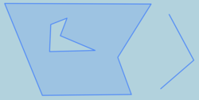

Function (Snowflake)
Note
Please always keep the schema name SEDONA (e.g., SEDONA.ST_GeomFromWKT) when you use Sedona functions to avoid conflicting with Snowflake's built-in functions.
GeometryType¶
Introduction: Returns the type of the geometry as a string. Eg: 'LINESTRING', 'POLYGON', 'MULTIPOINT', etc. This function also indicates if the geometry is measured, by returning a string of the form 'POINTM'.
Format: GeometryType (A: Geometry)
SQL Example:
SELECT GeometryType(ST_GeomFromText('LINESTRING(77.29 29.07,77.42 29.26,77.27 29.31,77.29 29.07)'));
Output:
geometrytype
--------------
LINESTRING
SELECT GeometryType(ST_GeomFromText('POINTM(0 0 1)'));
Output:
geometrytype
--------------
POINTM
ST_3DDistance¶
Introduction: Return the 3-dimensional minimum cartesian distance between A and B
Format: ST_3DDistance (A:geometry, B:geometry)
SQL example:
SELECT ST_3DDistance(polygondf.countyshape, polygondf.countyshape)
FROM polygondf
ST_AddPoint¶
Introduction: RETURN Linestring with additional point at the given index, if position is not available the point will be added at the end of line.
Format: ST_AddPoint(geom: geometry, point: geometry, position: integer)
Format: ST_AddPoint(geom: geometry, point: geometry)
SQL example:
SELECT ST_AddPoint(ST_GeomFromText('LINESTRING(0 0, 1 1, 1 0)'), ST_GeomFromText('Point(21 52)'), 1)
SELECT ST_AddPoint(ST_GeomFromText('Linestring(0 0, 1 1, 1 0)'), ST_GeomFromText('Point(21 52)'))
Output:
LINESTRING(0 0, 21 52, 1 1, 1 0)
LINESTRING(0 0, 1 1, 1 0, 21 52)
ST_Affine¶
Introduction: Apply an affine transformation to the given geometry.
ST_Affine has 2 overloaded signatures:
ST_Affine(geometry, a, b, c, d, e, f, g, h, i, xOff, yOff, zOff)
ST_Affine(geometry, a, b, d, e, xOff, yOff)
Based on the invoked function, the following transformation is applied:
x = a * x + b * y + c * z + xOff OR x = a * x + b * y + xOff
y = d * x + e * y + f * z + yOff OR y = d * x + e * y + yOff
z = g * x + f * y + i * z + zOff OR z = g * x + f * y + zOff
If the given geometry is empty, the result is also empty.
Format:
ST_Affine(geometry, a, b, c, d, e, f, g, h, i, xOff, yOff, zOff)
ST_Affine(geometry, a, b, d, e, xOff, yOff)
ST_Affine(geometry, 1, 2, 4, 1, 1, 2, 3, 2, 5, 4, 8, 3)
Input: LINESTRING EMPTY
Output: LINESTRING EMPTY
Input: POLYGON ((1 0 1, 1 1 1, 2 2 2, 1 0 1))
Output: POLYGON Z((9 11 11, 11 12 13, 18 16 23, 9 11 11))
Input: POLYGON ((1 0, 1 1, 2 1, 2 0, 1 0), (1 0.5, 1 0.75, 1.5 0.75, 1.5 0.5, 1 0.5))
Output: POLYGON((5 9, 7 10, 8 11, 6 10, 5 9), (6 9.5, 6.5 9.75, 7 10.25, 6.5 10, 6 9.5))
ST_Affine(geometry, 1, 2, 1, 2, 1, 2)
Input: POLYGON EMPTY
Output: POLYGON EMPTY
Input: GEOMETRYCOLLECTION (MULTIPOLYGON (((1 0, 1 1, 2 1, 2 0, 1 0), (1 0.5, 1 0.75, 1.5 0.75, 1.5 0.5, 1 0.5)), ((5 0, 5 5, 7 5, 7 0, 5 0))), POINT (10 10))
Output: GEOMETRYCOLLECTION (MULTIPOLYGON (((2 3, 4 5, 5 6, 3 4, 2 3), (3 4, 3.5 4.5, 4 5, 3.5 4.5, 3 4)), ((6 7, 16 17, 18 19, 8 9, 6 7))), POINT (31 32))
Input: POLYGON ((1 0 1, 1 1 1, 2 2 2, 1 0 1))
Output: POLYGON Z((2 3 1, 4 5 1, 7 8 2, 2 3 1))
ST_Angle¶
Introduction: Computes and returns the angle between two vectors represented by the provided points or linestrings.
There are three variants possible for ST_Angle:
ST_Angle(point1: Geometry, point2: Geometry, point3: Geometry, point4: Geometry)
Computes the angle formed by vectors represented by point1 - point2 and point3 - point4
ST_Angle(point1: Geometry, point2: Geometry, point3: Geometry)
Computes the angle formed by vectors represented by point2 - point1 and point2 - point3
ST_Angle(line1: Geometry, line2: Geometry)
Computes the angle formed by vectors S1 - E1 and S2 - E2, where S and E denote start and end points respectively
Note
If any other geometry type is provided, ST_Angle throws an IllegalArgumentException.
Additionally, if any of the provided geometry is empty, ST_Angle throws an IllegalArgumentException.
Note
If a 3D geometry is provided, ST_Angle computes the angle ignoring the z ordinate, equivalent to calling ST_Angle for corresponding 2D geometries.
Tip
ST_Angle returns the angle in radian between 0 and 2\Pi. To convert the angle to degrees, use ST_Degrees.
Format: ST_Angle(p1, p2, p3, p4) | ST_Angle(p1, p2, p3) | ST_Angle(line1, line2)
SQL Example:
SELECT ST_Angle(ST_GeomFromWKT('POINT(0 0)'), ST_GeomFromWKT('POINT (1 1)'), ST_GeomFromWKT('POINT(1 0)'), ST_GeomFromWKT('POINT(6 2)'))
Output:
0.4048917862850834
SQL Example:
SELECT ST_Angle(ST_GeomFromWKT('POINT (1 1)'), ST_GeomFromWKT('POINT (0 0)'), ST_GeomFromWKT('POINT(3 2)'))
Output:
0.19739555984988044
SQL Example:
SELECT ST_Angle(ST_GeomFromWKT('LINESTRING (0 0, 1 1)'), ST_GeomFromWKT('LINESTRING (0 0, 3 2)'))
Output:
0.19739555984988044
ST_ApproximateMedialAxis¶
Introduction: Computes an approximate medial axis of a polygonal geometry. The medial axis is a representation of the "centerline" or "skeleton" of the polygon. This function first computes the straight skeleton and then prunes insignificant branches to produce a cleaner result.
The pruning removes small branches that represent minor penetrations into corners. A branch is pruned if its penetration depth is less than 20% of the width of the corner it bisects.
This function may have significant performance limitations when processing polygons with a very large number of vertices. For very large polygons (e.g., 10,000+ vertices), applying vertex reduction or simplification is essential to achieve practical computation times.
Format: ST_ApproximateMedialAxis(geom: geometry)
SQL example:
SELECT Sedona.ST_ApproximateMedialAxis(
ST_GeometryFromWKT('POLYGON ((45 0, 55 0, 55 40, 70 40, 70 50, 30 50, 30 40, 45 40, 45 0))')
)
Output: MULTILINESTRING ((50 45, 50 5), (50 45, 35 45), (65 45, 50 45), (35 45, 65 45))
ST_Area¶
Introduction: Return the area of A
Format: ST_Area (A:geometry)
SQL example:
SELECT ST_Area(polygondf.countyshape)
FROM polygondf
ST_AreaSpheroid¶
Introduction: Return the geodesic area of A using WGS84 spheroid. Unit is square meter. Works better for large geometries (country level) compared to ST_Area + ST_Transform. It is equivalent to PostGIS ST_Area(geography, use_spheroid=true) function and produces nearly identical results.
Geometry must be in EPSG:4326 (WGS84) projection and must be in lat/lon order. You can use ST_FlipCoordinates to swap lat and lon.
Format: ST_AreaSpheroid (A:geometry)
SQL example:
SELECT ST_AreaSpheroid(ST_GeomFromWKT('Polygon ((35 34, 30 28, 34 25, 35 34))'))
Output: 201824850811.76245
ST_AsBinary¶
Introduction: Return the Well-Known Binary representation of a geometry
Format: ST_AsBinary (A:geometry)
SQL example:
SELECT ST_AsBinary(polygondf.countyshape)
FROM polygondf
ST_AsEWKB¶
Introduction: Return the Extended Well-Known Binary representation of a geometry. EWKB is an extended version of WKB which includes the SRID of the geometry. The format originated in PostGIS but is supported by many GIS tools. If the geometry is lacking SRID a WKB format is produced. See ST_SetSRID
Format: ST_AsEWKB (A:geometry)
SQL example:
SELECT ST_AsEWKB(polygondf.countyshape)
FROM polygondf
ST_AsEWKT¶
Introduction: Return the Extended Well-Known Text representation of a geometry. EWKT is an extended version of WKT which includes the SRID of the geometry. The format originated in PostGIS but is supported by many GIS tools. If the geometry is lacking SRID a WKT format is produced. See ST_SetSRID
Format: ST_AsEWKT (A:geometry)
SQL example:
SELECT ST_AsEWKT(polygondf.countyshape)
FROM polygondf
ST_AsGeoJSON¶
Introduction: Return the GeoJSON string representation of a geometry
The type parameter takes the following options -
- "Simple" (default): Returns a simple GeoJSON geometry.
- "Feature": Wraps the geometry in a GeoJSON Feature.
- "FeatureCollection": Wraps the Feature in a GeoJSON FeatureCollection.
Format:
ST_AsGeoJSON (A:geometry)
ST_AsGeoJSON (A:geometry, type: String)
SQL Example (Simple GeoJSON):
SELECT ST_AsGeoJSON(ST_GeomFromWKT('POLYGON((1 1, 8 1, 8 8, 1 8, 1 1))'))
Output:
{
"type":"Polygon",
"coordinates":[
[[1.0,1.0],
[8.0,1.0],
[8.0,8.0],
[1.0,8.0],
[1.0,1.0]]
]
}
SQL Example (Feature GeoJSON):
Output:
{
"type":"Feature",
"geometry": {
"type":"Polygon",
"coordinates":[
[[1.0,1.0],
[8.0,1.0],
[8.0,8.0],
[1.0,8.0],
[1.0,1.0]]
]
}
}
SQL Example (FeatureCollection GeoJSON):
Output:
{
"type":"FeatureCollection",
"features": [{
"type":"Feature",
"geometry": {
"type":"Polygon",
"coordinates":[
[[1.0,1.0],
[8.0,1.0],
[8.0,8.0],
[1.0,8.0],
[1.0,1.0]]
]
}
}
]
}
ST_AsGML¶
Introduction: Return the GML string representation of a geometry
Format: ST_AsGML (A:geometry)
SQL example:
SELECT ST_AsGML(polygondf.countyshape)
FROM polygondf
ST_AsHEXEWKB¶
Introduction: This function returns the input geometry encoded to a text representation in HEXEWKB format. The HEXEWKB encoding can use either little-endian (NDR) or big-endian (XDR) byte ordering. If no encoding is explicitly specified, the function defaults to using the little-endian (NDR) format.
Format: ST_AsHEXEWKB(geom: Geometry, endian: String = NDR)
SQL Example
SELECT ST_AsHEXEWKB(ST_GeomFromWKT('POINT(1 2)'), 'XDR')
Output:
00000000013FF00000000000004000000000000000
SQL Example
SELECT ST_AsHEXEWKB(ST_GeomFromWKT('LINESTRING (30 20, 20 25, 20 15, 30 20)'))
Output:
0102000000040000000000000000003E4000000000000034400000000000003440000000000000394000000000000034400000000000002E400000000000003E400000000000003440
ST_AsKML¶
Introduction: Return the KML string representation of a geometry
Format: ST_AsKML (A:geometry)
SQL example:
SELECT ST_AsKML(polygondf.countyshape)
FROM polygondf
ST_AsText¶
Introduction: Return the Well-Known Text string representation of a geometry
Format: ST_AsText (A:geometry)
SQL example:
SELECT ST_AsText(polygondf.countyshape)
FROM polygondf
ST_Azimuth¶
Introduction: Returns Azimuth for two given points in radians null otherwise.
Format: ST_Azimuth(pointA: Point, pointB: Point)
SQL example:
SELECT ST_Azimuth(ST_POINT(0.0, 25.0), ST_POINT(0.0, 0.0))
Output: 3.141592653589793
ST_BestSRID¶
Introduction: Returns the estimated most appropriate Spatial Reference Identifier (SRID) for a given geometry, based on its spatial extent and location. It evaluates the geometry's bounding envelope and selects an SRID that optimally represents the geometry on the Earth's surface. The function prioritizes Universal Transverse Mercator (UTM), Lambert Azimuthal Equal Area (LAEA), or falls back to the Mercator projection. The function takes a WGS84 geometry and must be in lon/lat order.
- For geometries in the Arctic or Antarctic regions, the Lambert Azimuthal Equal Area projection is used.
- For geometries that fit within a single UTM zone and do not cross the International Date Line (IDL), a corresponding UTM SRID is chosen.
- In cases where none of the above conditions are met, the function defaults to the Mercator projection.
- For Geometries that cross the IDL,
ST_BestSRIDdefaults the SRID to Mercator. Currently,ST_BestSRIDdoes not handle geometries crossing the IDL.
Warning
ST_BestSRID is designed to estimate a suitable SRID from a set of approximately 125 EPSG codes and works best for geometries that fit within the UTM zones. It should not be solely relied upon to determine the most accurate SRID, especially for specialized or high-precision spatial requirements.
Format: ST_BestSRID(geom: Geometry)
Since: v1.6.0
SQL Example:
SELECT ST_BestSRID(ST_GeomFromWKT('POLYGON((-73.9980 40.7265, -73.9970 40.7265, -73.9970 40.7255, -73.9980 40.7255, -73.9980 40.7265))'))
Output:
32618
ST_Boundary¶
Introduction: Returns the closure of the combinatorial boundary of this Geometry.
Format: ST_Boundary(geom: geometry)
SQL example:
SELECT ST_Boundary(ST_GeomFromText('POLYGON((1 1,0 0, -1 1, 1 1))'))
Output: LINESTRING (1 1, 0 0, -1 1, 1 1)
ST_BoundingDiagonal¶
Introduction: Returns a linestring spanning minimum and maximum values of each dimension of the given geometry's coordinates as its start and end point respectively. If an empty geometry is provided, the returned LineString is also empty. If a single vertex (POINT) is provided, the returned LineString has both the start and end points same as the points coordinates
Format: ST_BoundingDiagonal(geom: Geometry)
SQL Example:
SELECT ST_BoundingDiagonal(ST_GeomFromWKT(geom))
Input: POLYGON ((1 1 1, 3 3 3, 0 1 4, 4 4 0, 1 1 1))
Output: LINESTRING Z(0 1 1, 4 4 4)
Input: POINT (10 10)
Output: LINESTRING (10 10, 10 10)
Input: GEOMETRYCOLLECTION(POLYGON ((5 5 5, -1 2 3, -1 -1 0, 5 5 5)), POINT (10 3 3))
Output: LINESTRING Z(-1 -1 0, 10 5 5)
ST_Buffer¶
Introduction: Returns a geometry/geography that represents all points whose distance from this Geometry/geography is less than or equal to distance. The function supports both Planar/Euclidean and Spheroidal/Geodesic buffering (Since v1.6.0). Spheroidal buffer also supports geometries crossing the International Date Line (IDL).
Mode of buffer calculation (Since: v1.6.0):
The optional third parameter, useSpheroid, controls the mode of buffer calculation.
- Planar Buffering (default): When
useSpheroidis false,ST_Bufferperforms standard planar buffering based on the provided parameters. - Spheroidal Buffering:
- When
useSpheroidis set to true, the function returns the spheroidal buffer polygon for more accurate representation over the Earth. In this mode, the unit of the buffer distance is interpreted as meters. - ST_Buffer first determines the most appropriate Spatial Reference Identifier (SRID) for a given geometry, based on its spatial extent and location, using
ST_BestSRID. - The geometry is then transformed from its original SRID to the selected SRID. If the input geometry does not have a set SRID,
ST_Bufferdefaults to using WGS 84 (SRID 4326) as its original SRID. - The standard planar buffer operation is then applied in this coordinate system.
- Finally, the buffered geometry is transformed back to its original SRID, or to WGS 84 if the original SRID was not set.
- When
Note
Spheroidal buffering only supports lon/lat coordinate systems and will throw an IllegalArgumentException for input geometries in meter based coordinate systems.
Note
Spheroidal buffering may not produce accurate output buffer for input geometries larger than a UTM zone.
Buffer Style Parameters:
The optional forth parameter controls the buffer accuracy and style. Buffer accuracy is specified by the number of line segments approximating a quarter circle, with a default of 8 segments. Buffer style can be set by providing blank-separated key=value pairs in a list format.
quad_segs=#: Number of line segments utilized to approximate a quarter circle (default is 8).endcap=round|flat|square: End cap style (default isround).buttis an accepted synonym forflat.join=round|mitre|bevel: Join style (default isround).miteris an accepted synonym formitre.mitre_limit=#.#: mitre ratio limit and it only affects mitred join style.miter_limitis an accepted synonym formitre_limit.side=both|left|right: Defaults toboth. Settingleftorrightenables a single-sided buffer operation on the geometry, with the buffered side aligned according to the direction of the line. This functionality is specific to LINESTRING geometry and has no impact on POINT or POLYGON geometries. By default, square end caps are applied whenleftorrightare specified.
Note
ST_Buffer throws an IllegalArgumentException if the correct format, parameters, or options are not provided.
Format:
ST_Buffer (A: Geometry, buffer: Double)
ST_Buffer (A: Geometry, buffer: Double, useSpheroid: Boolean)
ST_Buffer (A: Geometry, buffer: Double, useSpheroid: Boolean, bufferStyleParameters: String)
Since: v1.5.1
SQL Example:
SELECT ST_Buffer(ST_GeomFromWKT('POINT(0 0)'), 10)
SELECT ST_Buffer(ST_GeomFromWKT('POINT(0 0)'), 10, false, 'quad_segs=2')
Output:


8 Segments 2 Segments
SQL Example:
SELECT ST_Buffer(ST_GeomFromWKT('LINESTRING(0 0, 50 70, 100 100)'), 10, false, 'side=left')
Output:


Original Linestring Left side buffed Linestring
ST_BuildArea¶
Introduction: Returns the areal geometry formed by the constituent linework of the input geometry.
Format: ST_BuildArea (A:geometry)
Example:
SELECT ST_BuildArea(
ST_GeomFromText('MULTILINESTRING((0 0, 20 0, 20 20, 0 20, 0 0),(2 2, 18 2, 18 18, 2 18, 2 2))')
) AS geom
Result:
+----------------------------------------------------------------------------+
|geom |
+----------------------------------------------------------------------------+
|POLYGON((0 0,0 20,20 20,20 0,0 0),(2 2,18 2,18 18,2 18,2 2)) |
+----------------------------------------------------------------------------+
ST_Centroid¶
Introduction: Return the centroid point of A
Format: ST_Centroid (A:geometry)
SQL example:
SELECT ST_Centroid(polygondf.countyshape)
FROM polygondf
ST_ClosestPoint¶
Introduction: Returns the 2-dimensional point on geom1 that is closest to geom2. This is the first point of the shortest line between the geometries. If using 3D geometries, the Z coordinates will be ignored. If you have a 3D Geometry, you may prefer to use ST_3DClosestPoint. It will throw an exception indicates illegal argument if one of the params is an empty geometry.
Format: ST_ClosestPoint(g1: Geometry, g2: Geometry)
SQL Example:
SELECT ST_AsText( ST_ClosestPoint(g1, g2)) As ptwkt;
Input: g1: POINT (160 40), g2: LINESTRING (10 30, 50 50, 30 110, 70 90, 180 140, 130 190)
Output: POINT(160 40)
Input: g1: LINESTRING (10 30, 50 50, 30 110, 70 90, 180 140, 130 190), g2: POINT (160 40)
Output: POINT(125.75342465753425 115.34246575342466)
Input: g1: 'POLYGON ((190 150, 20 10, 160 70, 190 150))', g2: ST_Buffer('POINT(80 160)', 30)
Output: POINT(131.59149149528952 101.89887534906197)
ST_Collect¶
Introduction:
Build an appropriate Geometry, MultiGeometry, or GeometryCollection to contain the Geometrys in it. For example:
- If
geomListcontains a singlePolygon, thePolygonis returned. - If
geomListcontains severalPolygons, aMultiPolygonis returned. - If
geomListcontains somePolygons and someLineStrings, aGeometryCollectionis returned. - If
geomListis empty, an emptyGeometryCollectionis returned.
Note that this method does not "flatten" Geometries in the input, and hence if any MultiGeometries are contained in the input, a GeometryCollection containing them will be returned.
Format
ST_Collect(*geom: geometry)
Example:
WITH src_tbl AS (
SELECT sedona.ST_GeomFromText('POINT (40 10)') AS geom
UNION
SELECT sedona.ST_GeomFromText('LINESTRING (0 5, 0 10)') AS geom
)
SELECT sedona.ST_AsText(collection)
FROM src_tbl,
TABLE(sedona.ST_Collect(src_tbl.geom) OVER (PARTITION BY 1));
Result:
GEOMETRYCOLLECTION (POINT (40 10), LINESTRING (0 5, 0 10))
ST_CollectionExtract¶
Introduction: Returns a homogeneous multi-geometry from a given geometry collection.
The type numbers are:
- POINT
- LINESTRING
- POLYGON
If the type parameter is omitted a multi-geometry of the highest dimension is returned.
Format: ST_CollectionExtract (A:geometry)
Format: ST_CollectionExtract (A:geometry, type:Int)
Example:
WITH test_data as (
ST_GeomFromText(
'GEOMETRYCOLLECTION(POINT(40 10), POLYGON((0 0, 0 5, 5 5, 5 0, 0 0)))'
) as geom
)
SELECT ST_CollectionExtract(geom) as c1, ST_CollectionExtract(geom, 1) as c2
FROM test_data
Result:
+----------------------------------------------------------------------------+
|c1 |c2 |
+----------------------------------------------------------------------------+
|MULTIPOLYGON(((0 0, 0 5, 5 5, 5 0, 0 0))) |MULTIPOINT(40 10) | |
+----------------------------------------------------------------------------+
ST_ConcaveHull¶
Introduction: Return the Concave Hull of polygon A, with alpha set to pctConvex[0, 1] in the Delaunay Triangulation method, the concave hull will not contain a hole unless allowHoles is set to true
Format: ST_ConcaveHull (A:geometry, pctConvex:float)
Format: ST_ConcaveHull (A:geometry, pctConvex:float, allowHoles:Boolean)
SQL example:
SELECT ST_ConcaveHull(polygondf.countyshape, pctConvex)`
FROM polygondf
ST_ConvexHull¶
Introduction: Return the Convex Hull of polygon A
Format: ST_ConvexHull (A:geometry)
SQL example:
SELECT ST_ConvexHull(polygondf.countyshape)
FROM polygondf
ST_CoordDim¶
Introduction: Returns the coordinate dimensions of the geometry. It is an alias of ST_NDims.
Format: ST_CoordDim(geom: Geometry)
SQL Example with x, y, z coordinate:
SELECT ST_CoordDim(ST_GeomFromText('POINT(1 1 2'))
Output:
3
SQL Example with x, y coordinate:
SELECT ST_CoordDim(ST_GeomFromWKT('POINT(3 7)'))
Output:
2
ST_CrossesDateLine¶
Introduction: This function determines if a given geometry crosses the International Date Line. It operates by checking if the difference in longitude between any pair of consecutive points in the geometry exceeds 180 degrees. If such a difference is found, it is assumed that the geometry crosses the Date Line. It returns true if the geometry crosses the Date Line, and false otherwise.
Note
The function assumes that the provided geometry is in lon/lat coordinate reference system where longitude values range from -180 to 180 degrees.
Note
For multi-geometries (e.g., MultiPolygon, MultiLineString), this function will return true if any one of the geometries within the multi-geometry crosses the International Date Line.
Format: ST_CrossesDateLine(geometry: Geometry)
Since: v1.6.0
SQL Example:
SELECT ST_CrossesDateLine(ST_GeomFromWKT('LINESTRING(170 30, -170 30)'))
Output:
true
Warning
For geometries that span more than 180 degrees in longitude without actually crossing the Date Line, this function may still return true, indicating a crossing.
ST_Degrees¶
Introduction: Convert an angle in radian to degrees.
Format: ST_Degrees(angleInRadian)
SQL Example:
SELECT ST_Degrees(0.19739555984988044)
Output:
11.309932474020195
ST_DelaunayTriangles¶
Introduction: This function computes the Delaunay triangulation for the set of vertices in the input geometry. An optional tolerance parameter allows snapping nearby input vertices together prior to triangulation and can improve robustness in certain scenarios by handling near-coincident vertices. The default for tolerance is 0. The Delaunay triangulation geometry is bounded by the convex hull of the input vertex set.
The output geometry representation depends on the provided flag:
0- a GeometryCollection of triangular Polygons (default option)1- a MultiLinestring of the edges of the triangulation
Format:
ST_DelaunayTriangles(geometry: Geometry)
ST_DelaunayTriangles(geometry: Geometry, tolerance: Double)
ST_DelaunayTriangles(geometry: Geometry, tolerance: Double, flag: Integer)
SQL Example
SELECT ST_DelaunayTriangles(
ST_GeomFromWKT('POLYGON ((10 10, 15 30, 20 25, 25 35, 30 20, 40 30, 50 10, 45 5, 35 15, 30 5, 25 15, 20 10, 15 20, 10 10))')
)
Output:
GEOMETRYCOLLECTION (POLYGON ((15 30, 10 10, 15 20, 15 30)), POLYGON ((15 30, 15 20, 20 25, 15 30)), POLYGON ((15 30, 20 25, 25 35, 15 30)), POLYGON ((25 35, 20 25, 30 20, 25 35)), POLYGON ((25 35, 30 20, 40 30, 25 35)), POLYGON ((40 30, 30 20, 35 15, 40 30)), POLYGON ((40 30, 35 15, 50 10, 40 30)), POLYGON ((50 10, 35 15, 45 5, 50 10)), POLYGON ((30 5, 45 5, 35 15, 30 5)), POLYGON ((30 5, 35 15, 25 15, 30 5)), POLYGON ((30 5, 25 15, 20 10, 30 5)), POLYGON ((30 5, 20 10, 10 10, 30 5)), POLYGON ((10 10, 20 10, 15 20, 10 10)), POLYGON ((15 20, 20 10, 25 15, 15 20)), POLYGON ((15 20, 25 15, 20 25, 15 20)), POLYGON ((20 25, 25 15, 30 20, 20 25)), POLYGON ((30 20, 25 15, 35 15, 30 20)))
ST_Difference¶
Introduction: Return the difference between geometry A and B (return part of geometry A that does not intersect geometry B)
Format: ST_Difference (A:geometry, B:geometry)
Example:
SELECT ST_Difference(ST_GeomFromWKT('POLYGON ((-3 -3, 3 -3, 3 3, -3 3, -3 -3))'), ST_GeomFromWKT('POLYGON ((0 -4, 4 -4, 4 4, 0 4, 0 -4))'))
Result:
POLYGON ((0 -3, -3 -3, -3 3, 0 3, 0 -3))
ST_Dimension¶
Introduction: Return the topological dimension of this Geometry object, which must be less than or equal to the coordinate dimension. OGC SPEC s2.1.1.1 - returns 0 for POINT, 1 for LINESTRING, 2 for POLYGON, and the largest dimension of the components of a GEOMETRYCOLLECTION. If the dimension is unknown (e.g. for an empty GEOMETRYCOLLECTION) 0 is returned.
Format: ST_Dimension (A: Geometry) | ST_Dimension (C: Geometrycollection)
SQL Example:
SELECT ST_Dimension('GEOMETRYCOLLECTION(LINESTRING(1 1,0 0),POINT(0 0))');
Output:
1
ST_Distance¶
Introduction: Return the Euclidean distance between A and B
Format: ST_Distance (A:geometry, B:geometry)
SQL example:
SELECT ST_Distance(polygondf.countyshape, polygondf.countyshape)
FROM polygondf
ST_DistanceSphere¶
Introduction: Return the haversine / great-circle distance of A using a given earth radius (default radius: 6371008.0). Unit is meter. Compared to ST_Distance + ST_Transform, it works better for datasets that cover large regions such as continents or the entire planet. It is equivalent to PostGIS ST_Distance(geography, use_spheroid=false) and ST_DistanceSphere function and produces nearly identical results. It provides faster but less accurate result compared to ST_DistanceSpheroid.
Geometry must be in EPSG:4326 (WGS84) projection and must be in lat/lon order. You can use ST_FlipCoordinates to swap lat and lon. For non-point data, we first take the centroids of both geometries and then compute the distance.
Format: ST_DistanceSphere (A:geometry)
SQL example 1:
SELECT ST_DistanceSphere(ST_GeomFromWKT('POINT (51.3168 -0.56)'), ST_GeomFromWKT('POINT (55.9533 -3.1883)'))
Output: 543796.9506134904
SQL example 2:
SELECT ST_DistanceSphere(ST_GeomFromWKT('POINT (51.3168 -0.56)'), ST_GeomFromWKT('POINT (55.9533 -3.1883)'), 6378137.0)
Output: 544405.4459192449
ST_DistanceSpheroid¶
Introduction: Return the geodesic distance of A using WGS84 spheroid. Unit is meter. Compared to ST_Distance + ST_Transform, it works better for datasets that cover large regions such as continents or the entire planet. It is equivalent to PostGIS ST_Distance(geography, use_spheroid=true) and ST_DistanceSpheroid function and produces nearly identical results. It provides slower but more accurate result compared to ST_DistanceSphere.
Geometry must be in EPSG:4326 (WGS84) projection and must be in lat/lon order. You can use ST_FlipCoordinates to swap lat and lon. For non-point data, we first take the centroids of both geometries and then compute the distance.
Format: ST_DistanceSpheroid (A:geometry)
SQL example:
SELECT ST_DistanceSpheroid(ST_GeomFromWKT('POINT (51.3168 -0.56)'), ST_GeomFromWKT('POINT (55.9533 -3.1883)'))
Output: 544430.9411996207
ST_Dump¶
Introduction: This function takes a GeometryCollection/Multi Geometry object and returns a set of geometries containing the individual geometries that make up the input geometry. The function is useful for breaking down a GeometryCollection/Multi Geometry into its constituent geometries.
Format: ST_Dump(geom: geometry)
SQL example:
SELECT sedona.ST_AsText(geom)
FROM table(sedona.ST_Dump(sedona.ST_GeomFromText('MULTIPOINT ((10 40), (40 30), (20 20), (30 10))')));
Output:
POINT (10 40)
POINT (40 30)
POINT (20 20)
POINT (30 10)
ST_DumpPoints¶
Introduction: Returns a MultiPoint geometry which consists of individual points that compose the input line string.
Format: ST_DumpPoints(geom: geometry)
SQL example:
SELECT ST_DumpPoints(ST_GeomFromText('LINESTRING (0 0, 1 1, 1 0)'))
Output: MultiPoint ((0 0), (0 1), (1 1), (1 0), (0 0))
ST_EndPoint¶
Introduction: Returns last point of given linestring.
Format: ST_EndPoint(geom: geometry)
SQL example:
SELECT ST_EndPoint(ST_GeomFromText('LINESTRING(100 150,50 60, 70 80, 160 170)'))
Output: POINT(160 170)
ST_Envelope¶
Introduction: Return the envelope boundary of A
Format: ST_Envelope (A:geometry)
SQL example:
SELECT ST_Envelope(polygondf.countyshape)
FROM polygondf
ST_OrientedEnvelope¶
Introduction: Returns the minimum-area rotated rectangle enclosing a geometry. The rectangle may be rotated relative to the coordinate axes. Degenerate inputs may result in a Point or LineString being returned.
Format: ST_OrientedEnvelope(geometry: Geometry)
SQL example:
SELECT ST_OrientedEnvelope(ST_GeomFromWKT('POLYGON ((0 0, 1 0, 5 4, 4 4, 0 0))'))
Output: POLYGON ((0 0, 4.5 4.5, 5 4, 0.5 -0.5, 0 0))
ST_Expand¶
Introduction: Returns a geometry expanded from the bounding box of the input. The expansion can be specified in two ways:
- By individual axis using
deltaX,deltaY, ordeltaZparameters. - Uniformly across all axes using the
uniformDeltaparameter.
Format:
ST_Expand(geometry: Geometry, uniformDelta: Double)
ST_Expand(geometry: Geometry, deltaX: Double, deltaY: Double)
ST_Expand(geometry: Geometry, deltaX: Double, deltaY: Double, deltaZ: Double)
Note
Things to consider when using this function:
- The
uniformDeltaparameter expands Z dimensions for XYZ geometries; otherwise, it only affects XY dimensions. - For XYZ geometries, specifying only
deltaXanddeltaYwill preserve the original Z dimension. - If the input geometry has an M dimension then using this function will drop the said M dimension.
SQL Example:
SELECT ST_Expand(
ST_GeomFromWKT('POLYGON Z((50 50 1, 50 80 2, 80 80 3, 80 50 2, 50 50 1))'),
10
)
Output:
POLYGON Z((40 40 -9, 40 90 -9, 90 90 13, 90 40 13, 40 40 -9))
ST_ExteriorRing¶
Introduction: Returns a line string representing the exterior ring of the POLYGON geometry. Return NULL if the geometry is not a polygon.
Format: ST_ExteriorRing(geom: geometry)
SQL example:
SELECT ST_ExteriorRing(ST_GeomFromText('POLYGON((0 0 1, 1 1 1, 1 2 1, 1 1 1, 0 0 1))'))
Output: LINESTRING (0 0, 1 1, 1 2, 1 1, 0 0)
ST_FlipCoordinates¶
Introduction: Returns a version of the given geometry with X and Y axis flipped.
Format: ST_FlipCoordinates(A:geometry)
SQL example:
SELECT ST_FlipCoordinates(df.geometry)
FROM df
Input: POINT (1 2)
Output: POINT (2 1)
ST_Force_2D¶
Introduction: Forces the geometries into a "2-dimensional mode" so that all output representations will only have the X and Y coordinates. This function is an alias of ST_Force2D.
Format: ST_Force_2D (A:geometry)
Example:
SELECT ST_AsText(
ST_Force_2D(ST_GeomFromText('POLYGON((0 0 2,0 5 2,5 0 2,0 0 2),(1 1 2,3 1 2,1 3 2,1 1 2))'))
) AS geom
Result:
+---------------------------------------------------------------+
|geom |
+---------------------------------------------------------------+
|POLYGON((0 0,0 5,5 0,0 0),(1 1,3 1,1 3,1 1)) |
+---------------------------------------------------------------+
ST_Force2D¶
Introduction: Forces the geometries into a "2-dimensional mode" so that all output representations will only have the X and Y coordinates. This function is an alias of ST_Force_2D.
Format: ST_Force2D (A:geometry)
Example:
SELECT ST_AsText(
ST_Force2D(ST_GeomFromText('POLYGON((0 0 2,0 5 2,5 0 2,0 0 2),(1 1 2,3 1 2,1 3 2,1 1 2))'))
) AS geom
Result:
+---------------------------------------------------------------+
|geom |
+---------------------------------------------------------------+
|POLYGON((0 0,0 5,5 0,0 0),(1 1,3 1,1 3,1 1)) |
+---------------------------------------------------------------+
ST_Force3D¶
Introduction: Forces the geometry into a 3-dimensional model so that all output representations will have X, Y and Z coordinates. An optionally given zValue is tacked onto the geometry if the geometry is 2-dimensional. Default value of zValue is 0.0 If the given geometry is 3-dimensional, no change is performed on it. If the given geometry is empty, no change is performed on it.
Note
Example output is after calling ST_AsText() on returned geometry, which adds Z for in the WKT for 3D geometries
Format: ST_Force3D(geometry, zValue)
SQL Example:
SELECT ST_Force3D(geometry) AS geom
Input: LINESTRING(0 1, 1 2, 2 1)
Output: LINESTRING Z(0 1 0, 1 2 0, 2 1 0)
Input: POLYGON((0 0 2,0 5 2,5 0 2,0 0 2),(1 1 2,3 1 2,1 3 2,1 1 2))
Output: POLYGON Z((0 0 2,0 5 2,5 0 2,0 0 2),(1 1 2,3 1 2,1 3 2,1 1 2))
SELECT ST_Force3D(geometry, 2.3) AS geom
Input: LINESTRING(0 1, 1 2, 2 1)
Output: LINESTRING Z(0 1 2.3, 1 2 2.3, 2 1 2.3)
Input: POLYGON((0 0 2,0 5 2,5 0 2,0 0 2),(1 1 2,3 1 2,1 3 2,1 1 2))
Output: POLYGON Z((0 0 2,0 5 2,5 0 2,0 0 2),(1 1 2,3 1 2,1 3 2,1 1 2))
Input: LINESTRING EMPTY
Output: LINESTRING EMPTY
ST_Force3DZ¶
Introduction: Forces the geometry into a 3-dimensional model so that all output representations will have X, Y and Z coordinates. An optionally given zValue is tacked onto the geometry if the geometry is 2-dimensional. Default value of zValue is 0.0 If the given geometry is 3-dimensional, no change is performed on it. If the given geometry is empty, no change is performed on it. This function is an alias for ST_Force3D.
Note
Example output is after calling ST_AsText() on returned geometry, which adds Z for in the WKT for 3D geometries
Format: ST_Force3DZ(geometry: Geometry, zValue: Double)
SQL Example
SELECT ST_AsText(ST_Force3DZ(ST_GeomFromText('POLYGON((0 0 2,0 5 2,5 0 2,0 0 2),(1 1 2,3 1 2,1 3 2,1 1 2))'), 2.3))
Output:
POLYGON Z((0 0 2, 0 5 2, 5 0 2, 0 0 2), (1 1 2, 3 1 2, 1 3 2, 1 1 2))
SQL Example
SELECT ST_AsText(ST_Force3DZ(ST_GeomFromText('LINESTRING(0 1,1 0,2 0)'), 2.3))
Output:
LINESTRING Z(0 1 2.3, 1 0 2.3, 2 0 2.3)
ST_ForceCollection¶
Introduction: This function converts the input geometry into a GeometryCollection, regardless of the original geometry type. If the input is a multipart geometry, such as a MultiPolygon or MultiLineString, it will be decomposed into a GeometryCollection containing each individual Polygon or LineString element from the original multipart geometry.
Format: ST_ForceCollection(geom: Geometry)
SQL Example
SELECT ST_ForceCollection(
ST_GeomFromWKT(
"MULTIPOINT (30 10, 40 40, 20 20, 10 30, 10 10, 20 50)"
)
)
Output:
GEOMETRYCOLLECTION (POINT (30 10), POINT (40 40), POINT (20 20), POINT (10 30), POINT (10 10), POINT (20 50))
ST_ForcePolygonCCW¶
Introduction: For (Multi)Polygon geometries, this function sets the exterior ring orientation to counter-clockwise and interior rings to clockwise orientation. Non-polygonal geometries are returned unchanged.
Format: ST_ForcePolygonCCW(geom: Geometry)
SQL Example:
SELECT ST_AsText(ST_ForcePolygonCCW(ST_GeomFromText('POLYGON ((20 35, 45 20, 30 5, 10 10, 10 30, 20 35), (30 20, 20 25, 20 15, 30 20))')))
Output:
POLYGON ((20 35, 10 30, 10 10, 30 5, 45 20, 20 35), (30 20, 20 15, 20 25, 30 20))
ST_ForcePolygonCW¶
Introduction: For (Multi)Polygon geometries, this function sets the exterior ring orientation to clockwise and interior rings to counter-clockwise orientation. Non-polygonal geometries are returned unchanged.
Format: ST_ForcePolygonCW(geom: Geometry)
SQL Example:
SELECT ST_AsText(ST_ForcePolygonCW(ST_GeomFromText('POLYGON ((20 35, 10 30, 10 10, 30 5, 45 20, 20 35),(30 20, 20 15, 20 25, 30 20))')))
Output:
POLYGON ((20 35, 45 20, 30 5, 10 10, 10 30, 20 35), (30 20, 20 25, 20 15, 30 20))
ST_ForceRHR¶
Introduction: Sets the orientation of polygon vertex orderings to follow the Right-Hand-Rule convention. The exterior ring will have a clockwise winding order, while any interior rings are oriented counter-clockwise. This ensures the area bounded by the polygon falls on the right-hand side relative to the ring directions. The function is an alias for ST_ForcePolygonCW.
Format: ST_ForceRHR(geom: Geometry)
SQL Example:
SELECT ST_AsText(ST_ForceRHR(ST_GeomFromText('POLYGON ((20 35, 10 30, 10 10, 30 5, 45 20, 20 35),(30 20, 20 15, 20 25, 30 20))')))
Output:
POLYGON ((20 35, 45 20, 30 5, 10 10, 10 30, 20 35), (30 20, 20 25, 20 15, 30 20))
ST_FrechetDistance¶
Introduction: Computes and returns discrete Frechet Distance between the given two geometries, based on Computing Discrete Frechet Distance
If any of the geometries is empty, returns 0.0
Format: ST_FrechetDistance(g1: Geometry, g2: Geometry)
SQL Example:
SELECT ST_FrechetDistance(ST_GeomFromWKT('POINT (0 1)'), ST_GeomFromWKT('LINESTRING (0 0, 1 0, 2 0, 3 0, 4 0, 5 0)'))
Output:
5.0990195135927845
ST_GeneratePoints¶
Introduction: Generates a specified quantity of pseudo-random points within the boundaries of the provided polygonal geometry. When seed is either zero or not defined then output will be random.
Format:
ST_GeneratePoints(geom: Geometry, numPoints: Integer, seed: Long = 0)
ST_GeneratePoints(geom: Geometry, numPoints: Integer)
SQL Example:
SELECT ST_GeneratePoints(
ST_GeomFromWKT('POLYGON((0 0, 1 0, 1 1, 0 1, 0 0))'), 4
)
Output:
Note
Due to the pseudo-random nature of point generation, the output of this function will vary between executions and may not match any provided examples.
MULTIPOINT ((0.2393028905520183 0.9721563442837837), (0.3805848547053376 0.7546556656982678), (0.0950295778200995 0.2494334895495989), (0.4133520939987385 0.3447046312451945))
ST_GeoHash¶
Introduction: Returns GeoHash of the geometry with given precision
Format: ST_GeoHash(geom: geometry, precision: int)
Example:
Query:
SELECT ST_GeoHash(ST_GeomFromText('POINT(21.427834 52.042576573)'), 5) AS geohash
Result:
+-----------------------------+
|geohash |
+-----------------------------+
|u3r0p |
+-----------------------------+
ST_GeometricMedian¶
Introduction: Computes the approximate geometric median of a MultiPoint geometry using the Weiszfeld algorithm. The geometric median provides a centrality measure that is less sensitive to outlier points than the centroid.
The algorithm will iterate until the distance change between successive iterations is less than the supplied tolerance parameter. If this condition has not been met after maxIter iterations, the function will produce an error and exit, unless failIfNotConverged is set to false.
If a tolerance value is not provided, a default tolerance value is 1e-6.
Format: ST_GeometricMedian(geom: geometry, tolerance: float, maxIter: integer, failIfNotConverged: boolean)
Format: ST_GeometricMedian(geom: geometry, tolerance: float, maxIter: integer)
Format: ST_GeometricMedian(geom: geometry, tolerance: float)
Format: ST_GeometricMedian(geom: geometry)
Default parameters: tolerance: 1e-6, maxIter: 1000, failIfNotConverged: false
Example:
SELECT ST_GeometricMedian(ST_GeomFromWKT('MULTIPOINT((0 0), (1 1), (2 2), (200 200))'))
Output:
POINT (1.9761550281255005 1.9761550281255005)
ST_GeometryN¶
Introduction: Return the 0-based Nth geometry if the geometry is a GEOMETRYCOLLECTION, (MULTI)POINT, (MULTI)LINESTRING, MULTICURVE or (MULTI)POLYGON. Otherwise, return null
Format: ST_GeometryN(geom: geometry, n: Int)
SQL example:
SELECT ST_GeometryN(ST_GeomFromText('MULTIPOINT((1 2), (3 4), (5 6), (8 9))'), 1)
Output: POINT (3 4)
ST_GeometryType¶
Introduction: Returns the type of the geometry as a string. EG: 'ST_Linestring', 'ST_Polygon' etc.
Format: ST_GeometryType (A:geometry)
SQL example:
SELECT ST_GeometryType(polygondf.countyshape)
FROM polygondf
ST_HasZ¶
Introduction: Checks for the presence of Z coordinate values representing measures or linear references. Returns true if the input geometry includes an Z coordinate, false otherwise.
Format: ST_HasZ(geom: Geometry)
SQL Example
SELECT ST_HasZ(
ST_GeomFromWKT('LINESTRING Z (30 10 5, 40 40 10, 20 40 15, 10 20 20)')
)
Output:
True
ST_HausdorffDistance¶
Introduction: Returns a discretized (and hence approximate) Hausdorff distance between the given 2 geometries. Optionally, a densityFraction parameter can be specified, which gives more accurate results by densifying segments before computing hausdorff distance between them. Each segment is broken down into equal-length subsegments whose ratio with segment length is closest to the given density fraction.
Hence, the lower the densityFrac value, the more accurate is the computed hausdorff distance, and the more time it takes to compute it.
If any of the geometry is empty, 0.0 is returned.
Note
Accepted range of densityFrac is (0.0, 1.0], if any other value is provided, ST_HausdorffDistance throws an IllegalArgumentException
Note
Even though the function accepts 3D geometry, the z ordinate is ignored and the computed hausdorff distance is equivalent to the geometries not having the z ordinate.
Format: ST_HausdorffDistance(g1: Geometry, g2: Geometry, densityFrac: Double)
SQL Example:
SELECT ST_HausdorffDistance(ST_GeomFromWKT('POINT (0.0 1.0)'), ST_GeomFromWKT('LINESTRING (0 0, 1 0, 2 0, 3 0, 4 0, 5 0)'), 0.1)
Output:
5.0990195135927845
SQL Example:
SELECT ST_HausdorffDistance(ST_GeomFromText('POLYGON Z((1 0 1, 1 1 2, 2 1 5, 2 0 1, 1 0 1))'), ST_GeomFromText('POLYGON Z((4 0 4, 6 1 4, 6 4 9, 6 1 3, 4 0 4))'))
Output:
5.0
ST_InteriorRingN¶
Introduction: Returns the Nth interior linestring ring of the polygon geometry. Returns NULL if the geometry is not a polygon or the given N is out of range
Format: ST_InteriorRingN(geom: geometry, n: Int)
SQL example:
SELECT ST_InteriorRingN(ST_GeomFromText('POLYGON((0 0, 0 5, 5 5, 5 0, 0 0), (1 1, 2 1, 2 2, 1 2, 1 1), (1 3, 2 3, 2 4, 1 4, 1 3), (3 3, 4 3, 4 4, 3 4, 3 3))'), 0)
Output: LINESTRING (1 1, 2 1, 2 2, 1 2, 1 1)
ST_Intersection¶
Introduction: Return the intersection geometry of A and B
Format: ST_Intersection (A:geometry, B:geometry)
SQL example:
SELECT ST_Intersection(polygondf.countyshape, polygondf.countyshape)
FROM polygondf
ST_IsClosed¶
Introduction: RETURNS true if the LINESTRING start and end point are the same.
Format: ST_IsClosed(geom: geometry)
SQL example:
SELECT ST_IsClosed(ST_GeomFromText('LINESTRING(0 0, 1 1, 1 0)'))
Output: false
ST_IsCollection¶
Introduction: Returns TRUE if the geometry type of the input is a geometry collection type.
Collection types are the following:
- GEOMETRYCOLLECTION
- MULTI{POINT, POLYGON, LINESTRING}
Format: ST_IsCollection(geom: Geometry)
SQL Example:
SELECT ST_IsCollection(ST_GeomFromText('MULTIPOINT(0 0), (6 6)'))
Output:
true
SQL Example:
SELECT ST_IsCollection(ST_GeomFromText('POINT(5 5)'))
Output:
false
ST_IsEmpty¶
Introduction: Test if a geometry is empty geometry
Format: ST_IsEmpty (A:geometry)
SQL example:
SELECT ST_IsEmpty(polygondf.countyshape)
FROM polygondf
ST_IsPolygonCCW¶
Introduction: Returns true if all polygonal components in the input geometry have their exterior rings oriented counter-clockwise and interior rings oriented clockwise.
Format: ST_IsPolygonCCW(geom: Geometry)
SQL Example:
SELECT ST_IsPolygonCCW(ST_GeomFromWKT('POLYGON ((20 35, 10 30, 10 10, 30 5, 45 20, 20 35), (30 20, 20 15, 20 25, 30 20))'))
Output:
true
ST_IsPolygonCW¶
Introduction: Returns true if all polygonal components in the input geometry have their exterior rings oriented counter-clockwise and interior rings oriented clockwise.
Format: ST_IsPolygonCW(geom: Geometry)
SQL Example:
SELECT ST_IsPolygonCW(ST_GeomFromWKT('POLYGON ((20 35, 45 20, 30 5, 10 10, 10 30, 20 35), (30 20, 20 25, 20 15, 30 20))'))
Output:
true
ST_IsRing¶
Introduction: RETURN true if LINESTRING is ST_IsClosed and ST_IsSimple.
Format: ST_IsRing(geom: geometry)
SQL example:
SELECT ST_IsRing(ST_GeomFromText('LINESTRING(0 0, 0 1, 1 1, 1 0, 0 0)'))
Output: true
ST_IsSimple¶
Introduction: Test if geometry's only self-intersections are at boundary points.
Format: ST_IsSimple (A:geometry)
SQL example:
SELECT ST_IsSimple(polygondf.countyshape)
FROM polygondf
ST_IsValid¶
Introduction: Test if a geometry is well-formed. The function can be invoked with just the geometry or with an additional flag (from v1.5.1). The flag alters the validity checking behavior. The flags parameter is a bitfield with the following options:
- 0 (default): Use usual OGC SFS (Simple Features Specification) validity semantics.
- 1: "ESRI flag", Accepts certain self-touching rings as valid, which are considered invalid under OGC standards.
Formats:
ST_IsValid (A: Geometry)
ST_IsValid (A: Geometry, flag: Integer)
SQL Example:
SELECT ST_IsValid(ST_GeomFromWKT('POLYGON((0 0, 10 0, 10 10, 0 10, 0 0), (15 15, 15 20, 20 20, 20 15, 15 15))'))
Output:
false
ST_IsValidDetail¶
Introduction: Returns a row, containing a boolean valid stating if a geometry is valid, a string reason stating why it is invalid and a geometry location pointing out where it is invalid.
This function is a combination of ST_IsValid and ST_IsValidReason.
The flags parameter is a bitfield with the following options:
- 0: Use usual OGC SFS (Simple Features Specification) validity semantics.
- 1: "ESRI flag", Accepts certain self-touching rings as valid, which are considered invalid under OGC standards.
Format:
SELECT valid, reason, Sedonm.ST_AsText(location) AS location
FROM table(Sedona.ST_IsValidDetail(geom: Geometry, flag: Integer))
SQL Example:
SELECT valid, reason, Sedonm.ST_AsText(location) AS location
FROM table(Sedona.ST_IsValidDetail(Sedona.ST_GeomFromWKT('POLYGON ((30 10, 40 40, 20 40, 30 10, 10 20, 30 10))'), 0))
Output:
+-----+---------------------------------------------------------+-------------+
|valid|reason |location |
+-----+---------------------------------------------------------+-------------+
|false|Ring Self-intersection at or near point (30.0, 10.0, NaN)|POINT (30 10)|
+-----+---------------------------------------------------------+-------------+
ST_IsValidReason¶
Introduction: Returns text stating if the geometry is valid. If not, it provides a reason why it is invalid. The function can be invoked with just the geometry or with an additional flag. The flag alters the validity checking behavior. The flags parameter is a bitfield with the following options:
- 0 (default): Use usual OGC SFS (Simple Features Specification) validity semantics.
- 1: "ESRI flag", Accepts certain self-touching rings as valid, which are considered invalid under OGC standards.
Formats:
ST_IsValidReason (A: Geometry)
ST_IsValidReason (A: Geometry, flag: Integer)
SQL Example for valid geometry:
SELECT ST_IsValidReason(ST_GeomFromWKT('POLYGON ((100 100, 100 300, 300 300, 300 100, 100 100))')) as validity_info
Output:
Valid Geometry
SQL Example for invalid geometries:
SELECT gid, ST_IsValidReason(geom) as validity_info
FROM Geometry_table
WHERE ST_IsValid(geom) = false
ORDER BY gid
Output:
gid | validity_info
-----+----------------------------------------------------
5330 | Self-intersection at or near point (32.0, 5.0, NaN)
5340 | Self-intersection at or near point (42.0, 5.0, NaN)
5350 | Self-intersection at or near point (52.0, 5.0, NaN)
ST_LabelPoint¶
Introduction: ST_LabelPoint computes and returns a label point for a given polygon or geometry collection. The label point is chosen to be sufficiently far from boundaries of the geometry. For a regular Polygon this will be the
centroid.
The algorithm is derived from Tippecanoe’s polygon_to_anchor, an approximate solution for label point generation, designed to be faster than optimal algorithms like polylabel. It searches for a “good enough” label point within a limited number of iterations. For geometry collections, only the largest Polygon by area is considered. While ST_Centroid is a fast algorithm to calculate the center of mass of a (Multi)Polygon, it may place the point outside of the Polygon or near a boundary for concave shapes, polygons with holes, or MultiPolygons.
ST_LabelPoint takes up to 3 arguments,
geometry: input geometry (e.g., a Polygon or GeometryCollection) for which the anchor point is to be calculated.gridResolution(Optional, default is 16): Controls the resolution of the search grid for refining the label point. A higher resolution increases the grid density, providing a higher chance of finding a good enough result at the cost of runtime. For example, a gridResolution of 16 divides the bounding box of the polygon into a 16x16 grid.goodnessThreshold(Optional, default is 0.2): Determines the minimum acceptable “goodness” value for the anchor point. Higher thresholds prioritize points farther from boundaries but may require more computation.
Note
ST_LabelPointthrows anIllegalArgumentExceptionif the input geometry has an area of zero or less.- Holes within polygons are respected. Points within a hole are given a goodness of 0.
- For GeometryCollections, only the largest polygon by area is considered.
Tip
- Use
ST_LabelPointfor tasks such as label placement, identifying representative points for polygons, or other spatial analyses where an internal reference point is preferred but not required. If intersection of the point and the original geometry is required, use of an algorithm likepolylabelshould be considered. ST_LabelPointoffers a faster, approximate solution for label point generation, making it ideal for large datasets or real-time applications.
Format:
ST_LabelPoint(geometry: Geometry)
ST_LabelPoint(geometry: Geometry, gridResolution: Integer)
ST_LabelPoint(geometry: Geometry, gridResolution: Integer, goodnessThreshold: Double)
SQL Example:
SELECT ST_LabelPoint(ST_GeomFromWKT('POLYGON((0 0, 4 0, 4 4, 0 4, 0 0))'))
Output:
POINT (2 2)
SQL Example:
SELECT ST_LabelPoint(ST_GeomFromWKT('GEOMETRYCOLLECTION(POLYGON ((-112.840785 33.435962, -112.840785 33.708284, -112.409597 33.708284, -112.409597 33.435962, -112.840785 33.435962)), POLYGON ((-112.309264 33.398167, -112.309264 33.746007, -111.787444 33.746007, -111.787444 33.398167, -112.309264 33.398167)))'))
Output:
POINT (-112.04835399999999 33.57208699999999)
SQL Example:
SELECT ST_LabelPoint(ST_GeomFromWKT('POLYGON ((-112.654072 33.114485, -112.313516 33.653431, -111.63515 33.314399, -111.497829 33.874913, -111.692825 33.431378, -112.376684 33.788215, -112.654072 33.114485))', 4326))
Output:
SRID=4326;POINT (-112.0722602222832 33.53914975012836)
ST_Length¶
Introduction: Returns the perimeter of A.
Warning
This function only supports LineString, MultiLineString, and GeometryCollections containing linear geometries. Use ST_Perimeter for polygons.
Format: ST_Length (A:geometry)
SQL example:
SELECT ST_Length(polygondf.countyshape)
FROM polygondf
ST_Length2D¶
Introduction: Returns the perimeter of A. This function is an alias of ST_Length.
Warning
This function only supports LineString, MultiLineString, and GeometryCollections containing linear geometries. Use ST_Perimeter for polygons.
Format: ST_Length2D (A:geometry)
SQL example:
SELECT ST_Length2D(polygondf.countyshape)
FROM polygondf
ST_LengthSpheroid¶
Introduction: Return the geodesic perimeter of A using WGS84 spheroid. Unit is meter. Works better for large geometries (country level) compared to ST_Length + ST_Transform. It is equivalent to PostGIS ST_Length(geography, use_spheroid=true) and ST_LengthSpheroid function and produces nearly identical results.
Geometry must be in EPSG:4326 (WGS84) projection and must be in lat/lon order. You can use ST_FlipCoordinates to swap lat and lon.
Warning
This function only supports LineString, MultiLineString, and GeometryCollections containing linear geometries. Use ST_Perimeter for polygons.
Format: ST_LengthSpheroid (A:geometry)
SQL example:
SELECT ST_LengthSpheroid(ST_GeomFromWKT('LINESTRING (0 0, 2 0)'))
Output:
222638.98158654713
ST_LineFromMultiPoint¶
Introduction: Creates a LineString from a MultiPoint geometry.
Format: ST_LineFromMultiPoint (A:geometry)
Example:
SELECT ST_AsText(
ST_LineFromMultiPoint(ST_GeomFromText('MULTIPOINT((10 40), (40 30), (20 20), (30 10))'))
) AS geom
Result:
+---------------------------------------------------------------+
|geom |
+---------------------------------------------------------------+
|LINESTRING (10 40, 40 30, 20 20, 30 10) |
+---------------------------------------------------------------+
ST_LineInterpolatePoint¶
Introduction: Returns a point interpolated along a line. First argument must be a LINESTRING. Second argument is a Double between 0 and 1 representing fraction of total linestring length the point has to be located.
Format: ST_LineInterpolatePoint (geom: geometry, fraction: Double)
SQL example:
SELECT ST_LineInterpolatePoint(ST_GeomFromWKT('LINESTRING(25 50, 100 125, 150 190)'), 0.2) as Interpolated
Output:
+-----------------------------------------+
|Interpolated |
+-----------------------------------------+
|POINT (51.5974135047432 76.5974135047432)|
+-----------------------------------------+
ST_LineLocatePoint¶
Introduction: Returns a double between 0 and 1, representing the location of the closest point on the LineString as a fraction of its total length. The first argument must be a LINESTRING, and the second argument is a POINT geometry.
Format: ST_LineLocatePoint(linestring: Geometry, point: Geometry)
SQL Example:
SELECT ST_LineLocatePoint(ST_GeomFromWKT('LINESTRING(0 0, 1 1, 2 2)'), ST_GeomFromWKT('POINT(0 2)'))
Output:
0.5
ST_LineMerge¶
Introduction: Returns a LineString or MultiLineString formed by sewing together the constituent line work of a MULTILINESTRING.
Note
Only works for MULTILINESTRING. Using other geometry will return a GEOMETRYCOLLECTION EMPTY. If no merging can be performed, the original MULTILINESTRING is returned.
Format: ST_LineMerge (A:geometry)
SELECT ST_LineMerge(geometry)
FROM df
ST_LineSubstring¶
Introduction: Return a linestring being a substring of the input one starting and ending at the given fractions of total 2d length. Second and third arguments are Double values between 0 and 1. This only works with LINESTRINGs.
Format: ST_LineSubstring (geom: geometry, startfraction: Double, endfraction: Double)
SQL example:
SELECT ST_LineSubstring(ST_GeomFromWKT('LINESTRING(25 50, 100 125, 150 190)'), 0.333, 0.666) as Substring
ST_LongestLine¶
Introduction: Returns the LineString geometry representing the maximum distance between any two points from the input geometries.
Format: ST_LongestLine(geom1: Geometry, geom2: Geometry)
SQL Example:
SELECT ST_LongestLine(
ST_GeomFromText("POLYGON ((30 10, 40 40, 20 40, 10 20, 30 10))"),
ST_GeomFromText("POLYGON ((10 20, 30 30, 40 20, 30 10, 10 20))")
)
Output:
LINESTRING (40 40, 10 20)
Output:
+------------------------------------------------------------------------------------------------+
|Substring |
+------------------------------------------------------------------------------------------------+
|LINESTRING (69.28469348539744 94.28469348539744, 100 125, 111.70035626068274 140.21046313888758)|
+------------------------------------------------------------------------------------------------+
ST_MakeLine¶
Introduction: Creates a LineString containing the points of Point, MultiPoint, or LineString geometries. Other geometry types cause an error.
Format:
ST_MakeLine(geom1: Geometry, geom2: Geometry)
ST_MakeLine(geoms: Geometry) This Geometry must be a GeometryCollection of the geometry types listed above.
SQL Example:
SELECT ST_AsText( ST_MakeLine(ST_Point(1,2), ST_Point(3,4)) );
Output:
LINESTRING(1 2,3 4)
SQL Example:
SELECT ST_AsText( ST_MakeLine( 'LINESTRING(0 0, 1 1)', 'LINESTRING(2 2, 3 3)' ) );
Output:
LINESTRING(0 0,1 1,2 2,3 3)
ST_MakePolygon¶
Introduction: Function to convert closed linestring to polygon including holes. The holes must be a MultiLinestring.
Format: ST_MakePolygon(geom: geometry, holes: <geometry>)
Example:
Query:
SELECT
ST_MakePolygon(
ST_GeomFromText('LINESTRING(7 -1, 7 6, 9 6, 9 1, 7 -1)'),
ST_GeomFromText('MultiLINESTRING((6 2, 8 2, 8 1, 6 1, 6 2))')
) AS polygon
Result:
+----------------------------------------------------------------+
|polygon |
+----------------------------------------------------------------+
|POLYGON ((7 -1, 7 6, 9 6, 9 1, 7 -1), (6 2, 8 2, 8 1, 6 1, 6 2))|
+----------------------------------------------------------------+
ST_MakeValid¶
Introduction: Given an invalid geometry, create a valid representation of the geometry.
Collapsed geometries are either converted to empty (keepCollapsed=true) or a valid geometry of lower dimension (keepCollapsed=false). Default is keepCollapsed=false.
Format: ST_MakeValid (A:geometry)
Format: ST_MakeValid (A:geometry, keepCollapsed:Boolean)
SQL example:
WITH linestring AS (
SELECT ST_GeomFromWKT('LINESTRING(1 1, 1 1)') AS geom
) SELECT ST_MakeValid(geom), ST_MakeValid(geom, true) FROM linestring
Result:
+------------------+------------------------+
|st_makevalid(geom)|st_makevalid(geom, true)|
+------------------+------------------------+
| LINESTRING EMPTY| POINT (1 1)|
+------------------+------------------------+
Note
In Sedona up to and including version 1.2 the behaviour of ST_MakeValid was different. Be sure to check you code when upgrading. The previous implementation only worked for (multi)polygons and had a different interpretation of the second, boolean, argument. It would also sometimes return multiple geometries for a single geometry input.
ST_MaximumInscribedCircle¶
Introduction: Finds the largest circle that is contained within a (multi)polygon, or which does not overlap any lines and points. Returns a row with fields:
center- center point of the circlenearest- nearest point from the center of the circleradius- radius of the circle
For polygonal geometries, the function inscribes the circle within the boundary rings, treating internal rings as additional constraints. When processing linear and point inputs, the algorithm inscribes the circle within the convex hull of the input, utilizing the input lines and points as additional boundary constraints.
Format: ST_MaximumInscribedCircle(geometry: Geometry)
Since: v1.6.1
SQL Example:
SELECT Sedona.ST_AsText(center) AS center, Sedona.ST_AsText(nearest) AS nearest, radius FROM table(
SELECT ST_MaximumIncribedCircle(ST_GeomFromWKT('POLYGON ((62.11 19.68, 60.79 17.20, 61.30 15.96, 62.11 16.08, 65.93 16.95, 66.20 20.61, 63.08 21.43, 64.48 18.70, 62.11 19.68))'))
)
Output:
+---------------------------------------------+-------------------------------------------+------------------+
|center |nearest |radius |
+---------------------------------------------+-------------------------------------------+------------------+
|POINT (62.794975585937514 17.774780273437496)|POINT (63.36773534817729 19.15992378007859)|1.4988916836219184|
+---------------------------------------------+-------------------------------------------+------------------+
ST_MaxDistance¶
Introduction: Calculates and returns the length value representing the maximum distance between any two points across the input geometries. This function is an alias for ST_LongestDistance.
Format: ST_MaxDistance(geom1: Geometry, geom2: Geometry)
SQL Example:
SELECT ST_MaxDistance(
ST_GeomFromText("POLYGON ((30 10, 40 40, 20 40, 10 20, 30 10))"),
ST_GeomFromText("POLYGON ((10 20, 30 30, 40 20, 30 10, 10 20))")
)
Output:
36.05551275463989
ST_MinimumClearance¶
Introduction: The minimum clearance is a metric that quantifies a geometry's tolerance to changes in coordinate precision or vertex positions. It represents the maximum distance by which vertices can be adjusted without introducing invalidity to the geometry's structure. A larger minimum clearance value indicates greater robustness against such perturbations.
For a geometry with a minimum clearance of x, the following conditions hold:
- No two distinct vertices are separated by a distance less than
x. - No vertex lies within a distance
xfrom any line segment it is not an endpoint of.
For geometries with no definable minimum clearance, such as single Point geometries or MultiPoint geometries where all points occupy the same location, the function returns Double.MAX_VALUE.
Format: ST_MinimumClearance(geometry: Geometry)
SQL Example
SELECT ST_MinimumClearance(
ST_GeomFromWKT('POLYGON ((65 18, 62 16, 64.5 16, 62 14, 65 14, 65 18))')
)
Output:
0.5
ST_MinimumClearanceLine¶
Introduction: This function returns a two-point LineString geometry representing the minimum clearance distance of the input geometry. If the input geometry does not have a defined minimum clearance, such as for single Points or coincident MultiPoints, an empty LineString geometry is returned instead.
Format: ST_MinimumClearanceLine(geometry: Geometry)
SQL Example:
SELECT ST_MinimumClearanceLine(
ST_GeomFromWKT('POLYGON ((65 18, 62 16, 64.5 16, 62 14, 65 14, 65 18))')
)
Output:
LINESTRING (64.5 16, 65 16)
ST_MinimumBoundingCircle¶
Introduction: Returns the smallest circle polygon that contains a geometry.
Format: ST_MinimumBoundingCircle(geom: geometry, [Optional] quadrantSegments:int)
SQL example:
SELECT ST_MinimumBoundingCircle(ST_GeomFromText('POLYGON((1 1,0 0, -1 1, 1 1))'))
ST_MinimumBoundingRadius¶
Introduction: Returns two columns containing the center point and radius of the smallest circle that contains a geometry.
Format: ST_MinimumBoundingRadius(geom: geometry)
SQL example:
SELECT sedona.ST_AsText(center), radius
FROM table(sedona.ST_MinimumBoundingRadius(sedona.ST_GeomFromText('POLYGON ((0 0, 0 1, 1 1, 1 0, 0 0))')))
Result:
POINT (0.5 0.5), 0.7071067811865476
ST_Multi¶
Introduction: Returns a MultiGeometry object based on the geometry input. ST_Multi is basically an alias for ST_Collect with one geometry.
Format
ST_Multi(geom: geometry)
Example:
SELECT ST_Multi(
ST_GeomFromText('POINT(1 1)')
) AS geom
Result:
+---------------------------------------------------------------+
|geom |
+---------------------------------------------------------------+
|MULTIPOINT (1 1) |
+---------------------------------------------------------------+
ST_NDims¶
Introduction: Returns the coordinate dimension of the geometry.
Format: ST_NDims(geom: geometry)
SQL example with z coordinate:
SELECT ST_NDims(ST_GeomFromEWKT('POINT(1 1 2)'))
Output: 3
SQL example with x,y coordinate:
SELECT ST_NDims(ST_GeomFromText('POINT(1 1)'))
Output: 2
ST_Normalize¶
Introduction: Returns the input geometry in its normalized form.
Format
ST_Normalize(geom: geometry)
Example:
SELECT ST_AsEWKT(ST_Normalize(ST_GeomFromWKT('POLYGON((0 1, 1 1, 1 0, 0 0, 0 1))'))) AS geom
Result:
+-----------------------------------+
|geom |
+-----------------------------------+
|POLYGON ((0 0, 0 1, 1 1, 1 0, 0 0))|
+-----------------------------------+
ST_NPoints¶
Introduction: Return points of the geometry
Format: ST_NPoints (A:geometry)
SELECT ST_NPoints(polygondf.countyshape)
FROM polygondf
ST_NRings¶
Introduction: Returns the number of rings in a Polygon or MultiPolygon. Contrary to ST_NumInteriorRings, this function also takes into account the number of exterior rings.
This function returns 0 for an empty Polygon or MultiPolygon. If the geometry is not a Polygon or MultiPolygon, an IllegalArgument Exception is thrown.
Format: ST_NRings(geom: geometry)
Examples:
Input: POLYGON ((1 0, 1 1, 2 1, 2 0, 1 0))
Output: 1
Input: 'MULTIPOLYGON (((1 0, 1 6, 6 6, 6 0, 1 0), (2 1, 2 2, 3 2, 3 1, 2 1)), ((10 0, 10 6, 16 6, 16 0, 10 0), (12 1, 12 2, 13 2, 13 1, 12 1)))'
Output: 4
Input: 'POLYGON EMPTY'
Output: 0
Input: 'LINESTRING (1 0, 1 1, 2 1)'
Output: Unsupported geometry type: LineString, only Polygon or MultiPolygon geometries are supported.
ST_NumGeometries¶
Introduction: Returns the number of Geometries. If geometry is a GEOMETRYCOLLECTION (or MULTI*) return the number of geometries, for single geometries will return 1.
Format: ST_NumGeometries (A:geometry)
SELECT ST_NumGeometries(df.geometry)
FROM df
ST_NumInteriorRing¶
Introduction: Returns number of interior rings of polygon geometries. It is an alias of ST_NumInteriorRings.
Format: ST_NumInteriorRing(geom: Geometry)
SQL Example
SELECT ST_NumInteriorRing(ST_GeomFromText('POLYGON ((0 0, 0 5, 5 5, 5 0, 0 0), (1 1, 2 1, 2 2, 1 2, 1 1))'))
Output:
1
ST_NumInteriorRings¶
Introduction: RETURNS number of interior rings of polygon geometries.
Format: ST_NumInteriorRings(geom: geometry)
SQL example:
SELECT ST_NumInteriorRings(ST_GeomFromText('POLYGON ((0 0, 0 5, 5 5, 5 0, 0 0), (1 1, 2 1, 2 2, 1 2, 1 1))'))
Output: 1
ST_NumPoints¶
Introduction: Returns number of points in a LineString
Format: ST_NumPoints(geom: geometry)
Note
If any other geometry is provided as an argument, an IllegalArgumentException is thrown.
SQL Example:
SELECT ST_NumPoints(ST_GeomFromWKT('MULTIPOINT ((0 0), (1 1), (0 1), (2 2))'))
Output:
IllegalArgumentException: Unsupported geometry type: MultiPoint, only LineString geometry is supported.
SQL Example:
SELECT ST_NumPoints(ST_GeomFromText('LINESTRING(0 1, 1 0, 2 0)'))
Output: 3
ST_Perimeter¶
Introduction: This function calculates the 2D perimeter of a given geometry. It supports Polygon, MultiPolygon, and GeometryCollection geometries (as long as the GeometryCollection contains polygonal geometries). For other types, it returns 0. To measure lines, use ST_Length.
To get the perimeter in meters, set use_spheroid to true. This calculates the geodesic perimeter using the WGS84 spheroid. When using use_spheroid, the lenient parameter defaults to true, assuming the geometry uses EPSG:4326. To throw an exception instead, set lenient to false.
Format:
ST_Perimeter(geom: Geometry)
ST_Perimeter(geom: Geometry, use_spheroid: Boolean)
ST_Perimeter(geom: Geometry, use_spheroid: Boolean, lenient: Boolean = True)
SQL Example:
SELECT ST_Perimeter(
ST_GeomFromText('POLYGON((0 0, 0 5, 5 5, 5 0, 0 0))')
)
Output:
20.0
SQL Example:
SELECT ST_Perimeter(
ST_GeomFromText('POLYGON((0 0, 0 5, 5 5, 5 0, 0 0))', 4326),
true, false
)
Output:
2216860.5497177234
ST_Perimeter2D¶
Introduction: This function calculates the 2D perimeter of a given geometry. It supports Polygon, MultiPolygon, and GeometryCollection geometries (as long as the GeometryCollection contains polygonal geometries). For other types, it returns 0. To measure lines, use ST_Length.
To get the perimeter in meters, set use_spheroid to true. This calculates the geodesic perimeter using the WGS84 spheroid. When using use_spheroid, the lenient parameter defaults to true, assuming the geometry uses EPSG:4326. To throw an exception instead, set lenient to false.
Info
This function is an alias for ST_Perimeter.
Format:
ST_Perimeter2D(geom: Geometry)
ST_Perimeter2D(geom: Geometry, use_spheroid: Boolean)
ST_Perimeter2D(geom: Geometry, use_spheroid: Boolean, lenient: Boolean = True)
SQL Example:
SELECT ST_Perimeter2D(
ST_GeomFromText('POLYGON((0 0, 0 5, 5 5, 5 0, 0 0))')
)
Output:
20.0
SQL Example:
SELECT ST_Perimeter2D(
ST_GeomFromText('POLYGON((0 0, 0 5, 5 5, 5 0, 0 0))', 4326),
true, false
)
Output:
2216860.5497177234
ST_PointN¶
Introduction: Return the Nth point in a single linestring or circular linestring in the geometry. Negative values are counted backwards from the end of the LineString, so that -1 is the last point. Returns NULL if there is no linestring in the geometry.
Format: ST_PointN(geom: geometry, n: integer)
SQL example:
SELECT ST_PointN(ST_GeomFromText('LINESTRING(0 0, 1 2, 2 4, 3 6)'), 2) AS geom
Result:
+---------------------------------------------------------------+
|geom |
+---------------------------------------------------------------+
|POINT (1 2) |
+---------------------------------------------------------------+
ST_PointOnSurface¶
Introduction: Returns a POINT guaranteed to lie on the surface.
Format: ST_PointOnSurface(A:geometry)
Examples:
SELECT ST_AsText(ST_PointOnSurface(ST_GeomFromText('POINT(0 5)')));
st_astext
------------
POINT(0 5)
SELECT ST_AsText(ST_PointOnSurface(ST_GeomFromText('LINESTRING(0 5, 0 10)')));
st_astext
------------
POINT(0 5)
SELECT ST_AsText(ST_PointOnSurface(ST_GeomFromText('POLYGON((0 0, 0 5, 5 5, 5 0, 0 0))')));
st_astext
----------------
POINT(2.5 2.5)
SELECT ST_AsText(ST_PointOnSurface(ST_GeomFromText('LINESTRING(0 5 1, 0 0 1, 0 10 2)')));
st_astext
----------------
POINT Z(0 0 1)
ST_Points¶
Introduction: Returns a MultiPoint geometry consisting of all the coordinates of the input geometry. It preserves duplicate points as well as M and Z coordinates.
Format: ST_Points(geom: Geometry)
SQL Example
SELECT ST_AsText(ST_Points(ST_GeomFromEWKT('LINESTRING (2 4, 3 3, 4 2, 7 3)')));
Output:
MULTIPOINT ((2 4), (3 3), (4 2), (7,3))
ST_Polygon¶
Introduction: Function to create a polygon built from the given LineString and sets the spatial reference system from the srid
Format: ST_Polygon(geom: Geometry, srid: Integer)
SQL Example:
SELECT ST_AsText( ST_Polygon(ST_GeomFromEWKT('LINESTRING(75 29 1, 77 29 2, 77 29 3, 75 29 1)'), 4326) );
Output:
POLYGON((75 29 1, 77 29 2, 77 29 3, 75 29 1))
ST_Polygonize¶
Introduction: Generates a GeometryCollection composed of polygons that are formed from the linework of an input GeometryCollection. When the input does not contain any linework that forms a polygon, the function will return an empty GeometryCollection.
Note
ST_Polygonize function assumes that the input geometries form a valid and simple closed linestring that can be turned into a polygon. If the input geometries are not noded or do not form such linestrings, the resulting GeometryCollection may be empty or may not contain the expected polygons.
Format: ST_Polygonize(geom: Geometry)
Example:
SELECT ST_AsText(ST_Polygonize(ST_GeomFromEWKT('GEOMETRYCOLLECTION (LINESTRING (2 0, 2 1, 2 2), LINESTRING (2 2, 2 3, 2 4), LINESTRING (0 2, 1 2, 2 2), LINESTRING (2 2, 3 2, 4 2), LINESTRING (0 2, 1 3, 2 4), LINESTRING (2 4, 3 3, 4 2))')));
Output:
GEOMETRYCOLLECTION (POLYGON ((0 2, 1 3, 2 4, 2 3, 2 2, 1 2, 0 2)), POLYGON ((2 2, 2 3, 2 4, 3 3, 4 2, 3 2, 2 2)))
ST_Project¶
Introduction: Calculates a new point location given a starting point, distance, and azimuth. The azimuth indicates the direction, expressed in radians, and is measured in a clockwise manner starting from true north. The system can handle azimuth values that are negative or exceed 2π (360 degrees). The optional lenient parameter prevents an error if the input geometry is not a Point. Its default value is false.
Format:
ST_Project(point: Geometry, distance: Double, azimuth: Double, lenient: Boolean = False)
ST_Project(point: Geometry, distance: Double, Azimuth: Double)
SQL Example:
SELECT ST_Project(ST_GeomFromText('POINT (10 15)'), 100, radians(90))
Output:
POINT (110 14.999999999999975)
SQL Example:
SELECT ST_Project(
ST_GeomFromText('POLYGON ((1 5, 1 1, 3 3, 5 3, 1 5))'),
25, radians(270), true)
Output:
POINT EMPTY
ST_ReducePrecision¶
Introduction: Reduce the decimals places in the coordinates of the geometry to the given number of decimal places. The last decimal place will be rounded. This function was called ST_PrecisionReduce in versions prior to v1.5.0.
Format: ST_ReducePrecision (A: Geometry, B: Integer)
SQL Example:
SELECT ST_ReducePrecision(ST_GeomFromWKT('Point(0.1234567890123456789 0.1234567890123456789)')
, 9)
The new coordinates will only have 9 decimal places.
Output:
POINT (0.123456789 0.123456789)
ST_RemovePoint¶
Introduction: RETURN Line with removed point at given index, position can be omitted and then last one will be removed.
Format: ST_RemovePoint(geom: geometry, position: integer)
Format: ST_RemovePoint(geom: geometry)
SQL example:
SELECT ST_RemovePoint(ST_GeomFromText('LINESTRING(0 0, 1 1, 1 0)'), 1)
Output: LINESTRING(0 0, 1 0)
ST_RemoveRepeatedPoints¶
Introduction: This function eliminates consecutive duplicate points within a geometry, preserving endpoints of LineStrings. It operates on (Multi)LineStrings, (Multi)Polygons, and MultiPoints, processing GeometryCollection elements individually. When an optional 'tolerance' value is provided, vertices within that distance are also considered duplicates.
Format:
ST_RemoveRepeatedPoints(geom: Geometry, tolerance: Double)
ST_RemoveRepeatedPoints(geom: Geometry)
SQL Example:
SELECT ST_RemoveRepeatedPoints(
ST_GeomFromWKT('MULTIPOINT ((20 20), (10 10), (30 30), (40 40), (20 20), (30 30), (40 40))')
)
Output:
MULTIPOINT ((20 20), (10 10), (30 30), (40 40))
SQL Example:
SELECT ST_RemoveRepeatedPoints(
ST_GeomFromWKT('LINESTRING (20 20, 10 10, 30 30, 40 40, 20 20, 30 30, 40 40)')
)
Output:
LINESTRING (20 20, 10 10, 30 30, 40 40, 20 20, 30 30, 40 40)
SQL Example: Each geometry within a collection is processed independently.
ST_RemoveRepeatedPoints(
ST_GeomFromWKT('GEOMETRYCOLLECTION (POINT (10 10), POINT(10 10), LINESTRING (20 20, 20 20, 30 30, 30 30), MULTIPOINT ((80 80), (90 90), (90 90), (100 100)))')
)
Output:
GEOMETRYCOLLECTION (POINT (10 10), POINT (10 10), LINESTRING (20 20, 30 30), MULTIPOINT ((80 80), (90 90), (100 100)))
SQL Example: Elimination of repeated points within a specified distance tolerance.
SELECT ST_RemoveRepeatedPoints(
ST_GeomFromWKT('LINESTRING (20 20, 10 10, 30 30, 40 40, 20 20, 30 30, 40 40)'),
20
)
Output:
LINESTRING (20 20, 40 40, 20 20, 40 40)
ST_Reverse¶
Introduction: Return the geometry with vertex order reversed
Format: ST_Reverse (A:geometry)
Example:
SELECT ST_AsText(
ST_Reverse(ST_GeomFromText('LINESTRING(0 0, 1 2, 2 4, 3 6)'))
) AS geom
Result:
+---------------------------------------------------------------+
|geom |
+---------------------------------------------------------------+
|LINESTRING (3 6, 2 4, 1 2, 0 0) |
+---------------------------------------------------------------+
ST_Rotate¶
Introduction: Rotates a geometry by a specified angle in radians counter-clockwise around a given origin point. The origin for rotation can be specified as either a POINT geometry or x and y coordinates. If the origin is not specified, the geometry is rotated around POINT(0 0).
Formats;
ST_Rotate (geometry: Geometry, angle: Double)
ST_Rotate (geometry: Geometry, angle: Double, originX: Double, originY: Double)
ST_Rotate (geometry: Geometry, angle: Double, pointOrigin: Geometry)
SQL Example:
SELECT ST_Rotate(ST_GeomFromEWKT('SRID=4326;POLYGON ((0 0, 1 0, 1 1, 0 0))'), 10, 0, 0)
Output:
SRID=4326;POLYGON ((0 0, -0.8390715290764524 -0.5440211108893698, -0.2950504181870827 -1.383092639965822, 0 0))
ST_RotateX¶
Introduction: Performs a counter-clockwise rotation of the specified geometry around the X-axis by the given angle measured in radians.
Format: ST_RotateX(geometry: Geometry, angle: Double)
SQL Example:
SELECT ST_RotateX(ST_GeomFromEWKT('SRID=4326;POLYGON ((0 0, 1 0, 1 1, 0 0))'), 10)
Output:
SRID=4326;POLYGON ((0 0, 1 0, 1 -0.8390715290764524, 0 0))
ST_RotateY¶
Introduction: Performs a counter-clockwise rotation of the specified geometry around the Y-axis by the given angle measured in radians.
Format: ST_RotateY(geometry: Geometry, angle: Double)
SQL Example:
SELECT ST_RotateY(ST_GeomFromEWKT('SRID=4326;POLYGON ((0 0, 1 0, 1 1, 0 0))'), 10)
Output:
SRID=4326;POLYGON ((0 0, -0.8390715290764524 0, -0.8390715290764524 1, 0 0))
ST_S2CellIDs¶
Introduction: Cover the geometry with Google S2 Cells, return the corresponding cell IDs with the given level. The level indicates the size of cells. With a bigger level, the cells will be smaller, the coverage will be more accurate, but the result size will be exponentially increasing.
Format: ST_S2CellIDs(geom: geometry, level: Int)
SQL example:
SELECT ST_S2CellIDs(ST_GeomFromText('LINESTRING(1 3 4, 5 6 7)'), 6)
Output:
+------------------------------------------------------------------------------------------------------------------------------+
|st_s2cellids(st_geomfromtext(LINESTRING(1 3 4, 5 6 7), 0), 6) |
+------------------------------------------------------------------------------------------------------------------------------+
|[1159395429071192064, 1159958379024613376, 1160521328978034688, 1161084278931456000, 1170091478186196992, 1170654428139618304]|
+------------------------------------------------------------------------------------------------------------------------------+
ST_Scale¶
Introduction: This function scales the geometry to a new size by multiplying the ordinates with the corresponding scaling factors provided as parameters scaleX and scaleY.
Note
This function is designed for scaling 2D geometries. While it currently doesn't support scaling the Z and M coordinates, it preserves these values during the scaling operation.
Format: ST_Scale(geometry: Geometry, scaleX: Double, scaleY: Double)
SQL Example:
SELECT ST_Scale(
ST_GeomFromWKT('POLYGON ((0 0, 0 1.5, 1.5 1.5, 1.5 0, 0 0))'),
3, 2
)
Output:
POLYGON ((0 0, 0 3, 4.5 3, 4.5 0, 0 0))
ST_ScaleGeom¶
Introduction: This function scales the input geometry (geometry) to a new size. It does this by multiplying the coordinates of the input geometry with corresponding values from another geometry (factor) representing the scaling factors.
To scale the geometry relative to a point other than the true origin (e.g., scaling a polygon in place using its centroid), you can use the three-geometry variant of this function. This variant requires an additional geometry (origin) representing the "false origin" for the scaling operation. If no origin is provided, the scaling occurs relative to the true origin, with all coordinates of the input geometry simply multiplied by the corresponding scale factors.
Note
This function is designed for scaling 2D geometries. While it currently doesn't support scaling the Z and M coordinates, it preserves these values during the scaling operation.
Format:
ST_ScaleGeom(geometry: Geometry, factor: Geometry, origin: Geometry)
ST_ScaleGeom(geometry: Geometry, factor: Geometry)
SQL Example:
SELECT ST_Scale(
ST_GeomFromWKT('POLYGON ((0 0, 0 1.5, 1.5 1.5, 1.5 0, 0 0))'),
ST_Point(3, 2)
)
Output:
POLYGON ((0 0, 0 3, 4.5 3, 4.5 0, 0 0))
SQL Example:
SELECT ST_Scale(
ST_GeomFromWKT('POLYGON ((0 0, 0 1.5, 1.5 1.5, 1.5 0, 0 0))'),
ST_Point(3, 2), ST_Point(1, 2)
)
Output:
POLYGON ((-2 -2, -2 1, 2.5 1, 2.5 -2, -2 -2))
ST_Segmentize¶
Introduction: Returns a modified geometry having no segment longer than the given max_segment_length.
The length calculation is performed in 2D. When a segment is longer than the specified maximum length, it is split into multiple, equal-length subsegments.
Format: ST_Segmentize(geom: Geometry, max_segment_length: Double)
Since: v1.8.0
SQL Example Long segments are split evenly into subsegments no longer than the specified length. Shorter segments are not modified.
SELECT ST_AsText(ST_Segmentize(ST_GeomFromText('MULTILINESTRING((0 0, 0 1, 0 9),(1 10, 1 18))'), 5));
Output:
MULTILINESTRING((0 0,0 1,0 5,0 9),(1 10,1 14,1 18))
SQL Example
SELECT ST_AsText(ST_Segmentize(ST_GeomFromText('POLYGON((0 0, 0 8, 30 0, 0 0))'), 10));
Output:
POLYGON((0 0,0 8,7.5 6,15 4,22.5 2,30 0,20 0,10 0,0 0))
ST_SetPoint¶
Introduction: Replace Nth point of linestring with given point. Index is 0-based. Negative index are counted backwards, e.g., -1 is last point.
Format: ST_SetPoint (linestring: geometry, index: integer, point: geometry)
Example:
SELECT ST_SetPoint(ST_GeomFromText('LINESTRING (0 0, 0 1, 1 1)'), 2, ST_GeomFromText('POINT (1 0)')) AS geom
Result:
+--------------------------+
|geom |
+--------------------------+
|LINESTRING (0 0, 0 1, 1 0)|
+--------------------------+
ST_SetSRID¶
Introduction: Sets the spatial reference system identifier (SRID) of the geometry.
Format: ST_SetSRID (A:geometry, srid: Integer)
SQL example:
SELECT ST_SetSRID(polygondf.countyshape, 3021)
FROM polygondf
ST_ShiftLongitude¶
Introduction: Modifies longitude coordinates in geometries, shifting values between -180..0 degrees to 180..360 degrees and vice versa. This is useful for normalizing data across the International Date Line and standardizing coordinate ranges for visualization and spheroidal calculations.
Note
This function is only applicable to geometries that use lon/lat coordinate systems.
Format: ST_ShiftLongitude (geom: geometry)
Since: v1.6.0
SQL example:
SELECT ST_ShiftLongitude(ST_GeomFromText('LINESTRING(177 10, 179 10, -179 10, -177 10)'))
Output:
LINESTRING(177 10, 179 10, 181 10, 183 10)
ST_Simplify¶
Introduction: This function simplifies the input geometry by applying the Douglas-Peucker algorithm.
Note
The simplification may not preserve topology, potentially producing invalid geometries. Use ST_SimplifyPreserveTopology to retain valid topology after simplification.
Format: ST_Simplify(geom: Geometry, tolerance: Double)
SQL Example:
SELECT ST_Simplify(ST_Buffer(ST_GeomFromWKT('POINT (0 2)'), 10), 1)
Output:
POLYGON ((10 2, 7.0710678118654755 -5.071067811865475, 0.0000000000000006 -8, -7.071067811865475 -5.0710678118654755, -10 1.9999999999999987, -7.071067811865477 9.071067811865476, -0.0000000000000018 12, 7.071067811865474 9.071067811865477, 10 2))
ST_SimplifyPolygonHull¶
Introduction: This function computes a topology-preserving simplified hull, either outer or inner, for a polygonal geometry input. An outer hull fully encloses the original geometry, while an inner hull lies entirely within. The result maintains the same structure as the input, including handling of MultiPolygons and holes, represented as a polygonal geometry formed from a subset of vertices.
Vertex reduction is governed by the vertexFactor parameter ranging from 0 to 1, with lower values yielding simpler outputs with fewer vertices and reduced concavity. For both hull types, a vertexFactor of 1.0 returns the original geometry. Specifically, for outer hulls, 0.0 computes the convex hull; for inner hulls, 0.0 produces a triangular geometry.
The simplification algorithm iteratively removes concave corners containing the least area until reaching the target vertex count. It preserves topology by preventing edge crossings, ensuring the output is a valid polygonal geometry in all cases.
Format:
ST_SimplifyPolygonHull(geom: Geometry, vertexFactor: Double, isOuter: Boolean = true)
ST_SimplifyPolygonHull(geom: Geometry, vertexFactor: Double)
SQL Example
SELECT ST_SimplifyPolygonHull(
ST_GeomFromText('POLYGON ((30 10, 40 40, 45 45, 50 30, 55 25, 60 50, 65 45, 70 30, 75 20, 80 25, 70 10, 30 10))'),
0.4
)
Output:
POLYGON ((30 10, 40 40, 45 45, 60 50, 65 45, 80 25, 70 10, 30 10))
SQL Example
SELECT ST_SimplifyPolygonHull(
ST_GeomFromText('POLYGON ((30 10, 40 40, 45 45, 50 30, 55 25, 60 50, 65 45, 70 30, 75 20, 80 25, 70 10, 30 10))'),
0.4, false
)
Output:
POLYGON ((30 10, 70 10, 60 50, 55 25, 30 10))
ST_SimplifyPreserveTopology¶
Introduction: Simplifies a geometry and ensures that the result is a valid geometry having the same dimension and number of components as the input, and with the components having the same topological relationship.
Format: ST_SimplifyPreserveTopology (A:geometry, distanceTolerance: Double)
SELECT ST_SimplifyPreserveTopology(polygondf.countyshape, 10.0)
FROM polygondf
ST_SimplifyVW¶
Introduction: This function simplifies the input geometry by applying the Visvalingam-Whyatt algorithm.
Note
The simplification may not preserve topology, potentially producing invalid geometries. Use ST_SimplifyPreserveTopology to retain valid topology after simplification.
Format: ST_SimplifyVW(geom: Geometry, tolerance: Double)
SQL Example
SELECT ST_SimplifyVW(ST_GeomFromWKT('POLYGON((8 25, 28 22, 28 20, 15 11, 33 3, 56 30, 46 33,46 34, 47 44, 35 36, 45 33, 43 19, 29 21, 29 22,35 26, 24 39, 8 25))'), 80)
Output:
POLYGON ((8 25, 28 22, 15 11, 33 3, 56 30, 47 44, 43 19, 24 39, 8 25))
ST_Snap¶
Introduction: Snaps the vertices and segments of the input geometry to reference geometry within the specified tolerance distance. The tolerance parameter controls the maximum snap distance.
If the minimum distance between the geometries exceeds the tolerance, the input geometry is returned unmodified. Adjusting the tolerance value allows tuning which vertices should snap to the reference and which remain untouched.
Format: ST_Snap(input: Geometry, reference: Geometry, tolerance: double)
Input geometry:

SQL Example:
SELECT
ST_Snap(poly, line, ST_Distance(poly, line) * 1.01) AS polySnapped FROM (
SELECT ST_GeomFromWKT('POLYGON ((236877.58 -6.61, 236878.29 -8.35, 236879.98 -8.33, 236879.72 -7.63, 236880.35 -6.62, 236877.58 -6.61), (236878.45 -7.01, 236878.43 -7.52, 236879.29 -7.50, 236878.63 -7.22, 236878.76 -6.89, 236878.45 -7.01))') as poly,
ST_GeomFromWKT('LINESTRING (236880.53 -8.22, 236881.15 -7.68, 236880.69 -6.81)') as line
)
Output:

POLYGON ((236877.58 -6.61, 236878.29 -8.35, 236879.98 -8.33, 236879.72 -7.63, 236880.69 -6.81, 236877.58 -6.61), (236878.45 -7.01, 236878.43 -7.52, 236879.29 -7.5, 236878.63 -7.22, 236878.76 -6.89, 236878.45 -7.01))
ST_Split¶
Introduction: Split an input geometry by another geometry (called the blade). Linear (LineString or MultiLineString) geometry can be split by a Point, MultiPoint, LineString, MultiLineString, Polygon, or MultiPolygon. Polygonal (Polygon or MultiPolygon) geometry can be split by a LineString, MultiLineString, Polygon, or MultiPolygon. In either case, when a polygonal blade is used then the boundary of the blade is what is actually split by. ST_Split will always return either a MultiLineString or MultiPolygon even if they only contain a single geometry. Homogeneous GeometryCollections are treated as a multi-geometry of the type it contains. For example, if a GeometryCollection of only Point geometries is passed as a blade it is the same as passing a MultiPoint of the same geometries.
Format: ST_Split (input: geometry, blade: geometry)
SQL Example:
SELECT ST_Split(
ST_GeomFromWKT('LINESTRING (0 0, 1.5 1.5, 2 2)'),
ST_GeomFromWKT('MULTIPOINT (0.5 0.5, 1 1)'))
Output: MULTILINESTRING ((0 0, 0.5 0.5), (0.5 0.5, 1 1), (1 1, 1.5 1.5, 2 2))
ST_SRID¶
Introduction: Return the spatial reference system identifier (SRID) of the geometry.
Format: ST_SRID (A:geometry)
SQL example:
SELECT ST_SRID(polygondf.countyshape)
FROM polygondf
ST_StartPoint¶
Introduction: Returns first point of given linestring.
Format: ST_StartPoint(geom: geometry)
SQL example:
SELECT ST_StartPoint(ST_GeomFromText('LINESTRING(100 150,50 60, 70 80, 160 170)'))
Output: POINT(100 150)
ST_StraightSkeleton¶
Introduction: Computes the straight skeleton of a polygonal geometry. The straight skeleton is a method of representing a polygon by a topological skeleton, formed by a continuous shrinking process where each edge moves inward in parallel at a uniform speed.
This function uses the weighted straight skeleton algorithm based on Felkel's approach.
This function may have significant performance limitations when processing polygons with a very large number of vertices. For very large polygons (e.g., 10,000+ vertices), applying vertex reduction or simplification is essential to achieve practical computation times.
Format: ST_StraightSkeleton(geom: geometry)
SQL example:
SELECT Sedona.ST_StraightSkeleton(
ST_GeometryFromWKT('POLYGON ((45 0, 55 0, 55 40, 70 40, 70 50, 30 50, 30 40, 45 40, 45 0))')
)
Output: MULTILINESTRING ((50 5, 50 45), (50 45, 35 45), (50 45, 65 45), (35 45, 30 45), (35 45, 40 40), (65 45, 70 45), (65 45, 60 40), (50 5, 45 5), (50 5, 55 5))
ST_SubDivide¶
Introduction: Returns a multi-geometry divided based of given maximum number of vertices.
A minimum of 5 vertices is required for maxVertices parameter to form a closed box.
Format: ST_SubDivide(geom: geometry, maxVertices: int)
SQL example:
SELECT Sedona.ST_AsText(Sedona.ST_SubDivide(Sedona.ST_GeomFromText('LINESTRING(0 0, 85 85, 100 100, 120 120, 21 21, 10 10, 5 5)'), 5));
Output:
MULTILINESTRING ((0 0, 5 5), (5 5, 10 10), (10 10, 21 21), (21 21, 60 60), (60 60, 85 85), (85 85, 100 100), (100 100, 120 120))
ST_SubDivideExplode¶
Introduction: It works the same as ST_SubDivide but returns new rows with geometries instead of a multi-geometry.
A minimum of 5 vertices is required for maxVertices parameter to form a closed box.
Format: SELECT SEDONA.ST_AsText(GEOM)
FROM table(SEDONA.ST_SubDivideExplode(geom: geometry, maxVertices: int))
Example:
Query:
SELECT Sedona.ST_AsText(GEOM)
FROM table(Sedona.ST_SubDivideExplode(Sedona.ST_GeomFromText('LINESTRING(0 0, 85 85, 100 100, 120 120, 21 21, 10 10, 5 5)'), 5));
Result:
+-----------------------------+
|geom |
+-----------------------------+
|LINESTRING(0 0, 5 5) |
|LINESTRING(5 5, 10 10) |
|LINESTRING(10 10, 21 21) |
|LINESTRING(21 21, 60 60) |
|LINESTRING(60 60, 85 85) |
|LINESTRING(85 85, 100 100) |
|LINESTRING(100 100, 120 120) |
+-----------------------------+
ST_SymDifference¶
Introduction: Return the symmetrical difference between geometry A and B (return parts of geometries which are in either of the sets, but not in their intersection)
Format: ST_SymDifference (A:geometry, B:geometry)
Example:
SELECT ST_SymDifference(ST_GeomFromWKT('POLYGON ((-3 -3, 3 -3, 3 3, -3 3, -3 -3))'), ST_GeomFromWKT('POLYGON ((-2 -3, 4 -3, 4 3, -2 3, -2 -3))'))
Result:
MULTIPOLYGON (((-2 -3, -3 -3, -3 3, -2 3, -2 -3)), ((3 -3, 3 3, 4 3, 4 -3, 3 -3)))
ST_Transform¶
Introduction:
Transform the Spatial Reference System / Coordinate Reference System of A, from SourceCRS to TargetCRS. For SourceCRS and TargetCRS, WKT format is also available.
Note
By default, this function uses lat/lon order. You can use ST_FlipCoordinates to swap X and Y.
Note
If ST_Transform throws an Exception called "Bursa wolf parameters required", you need to disable the error notification in ST_Transform. You can append a boolean value at the end.
Format: ST_Transform (A:geometry, SourceCRS:string, TargetCRS:string ,[Optional] DisableError)
SQL example (simple):
SELECT ST_Transform(polygondf.countyshape, 'epsg:4326','epsg:3857')
FROM polygondf
SQL example (with optional parameters):
SELECT ST_Transform(polygondf.countyshape, 'epsg:4326','epsg:3857', false)
FROM polygondf
Note
The detailed EPSG information can be searched on EPSG.io.
ST_Translate¶
Introduction: Returns the input geometry with its X, Y and Z coordinates (if present in the geometry) translated by deltaX, deltaY and deltaZ (if specified)
If the geometry is 2D, and a deltaZ parameter is specified, no change is done to the Z coordinate of the geometry and the resultant geometry is also 2D.
If the geometry is empty, no change is done to it. If the given geometry contains sub-geometries (GEOMETRY COLLECTION, MULTI POLYGON/LINE/POINT), all underlying geometries are individually translated.
Format: ST_Translate(geometry: geometry, deltaX: deltaX, deltaY: deltaY, deltaZ: deltaZ)
Example:
Input: ST_Translate(GEOMETRYCOLLECTION(MULTIPOLYGON (((1 0, 1 1, 2 1, 2 0, 1 0)), ((1 2, 3 4, 3 5, 1 2))), POINT(1, 1, 1), LINESTRING EMPTY), 2, 2, 3)
Output: GEOMETRYCOLLECTION(MULTIPOLYGON (((3 2, 3 3, 4 3, 4 2, 3 2)), ((3 4, 5 6, 5 7, 3 4))), POINT(3, 3, 4), LINESTRING EMPTY)
Input: ST_Translate(POINT(1, 3, 2), 1, 2)
Output: POINT(2, 5, 2)
ST_TriangulatePolygon¶
Introduction: Generates the constrained Delaunay triangulation for the input Polygon. The constrained Delaunay triangulation is a set of triangles created from the Polygon's vertices that covers the Polygon area precisely, while maximizing the combined interior angles across all triangles compared to other possible triangulations. This produces the highest quality triangulation representation of the Polygon geometry. The function returns a GeometryCollection of Polygon geometries comprising this optimized constrained Delaunay triangulation. Polygons with holes and MultiPolygon types are supported. For any other geometry type provided, such as Point, LineString, etc., an empty GeometryCollection will be returned.
Format: ST_TriangulatePolygon(geom: Geometry)
SQL Example
SELECT ST_TriangulatePolygon(
ST_GeomFromWKT('POLYGON ((0 0, 10 0, 10 10, 0 10, 0 0), (5 5, 5 8, 8 8, 8 5, 5 5))')
)
Output:
GEOMETRYCOLLECTION (POLYGON ((0 0, 0 10, 5 5, 0 0)), POLYGON ((5 8, 5 5, 0 10, 5 8)), POLYGON ((10 0, 0 0, 5 5, 10 0)), POLYGON ((10 10, 5 8, 0 10, 10 10)), POLYGON ((10 0, 5 5, 8 5, 10 0)), POLYGON ((5 8, 10 10, 8 8, 5 8)), POLYGON ((10 10, 10 0, 8 5, 10 10)), POLYGON ((8 5, 8 8, 10 10, 8 5)))
ST_UnaryUnion¶
Introduction: This variant of ST_Union operates on a single geometry input. The input geometry can be a simple Geometry type, a MultiGeometry, or a GeometryCollection. The function calculates the geometric union across all components and elements within the provided geometry object.
Format: ST_UnaryUnion(geometry: Geometry)
SQL Example
SELECT ST_UnaryUnion(ST_GeomFromWKT('MULTIPOLYGON(((0 10,0 30,20 30,20 10,0 10)),((10 0,10 20,30 20,30 0,10 0)))'))
Output:
POLYGON ((10 0, 10 10, 0 10, 0 30, 20 30, 20 20, 30 20, 30 0, 10 0))
ST_Union¶
Introduction: Return the union of geometry A and B
Format: ST_Union (A:geometry, B:geometry)
Example:
SELECT ST_Union(ST_GeomFromWKT('POLYGON ((-3 -3, 3 -3, 3 3, -3 3, -3 -3))'), ST_GeomFromWKT('POLYGON ((1 -2, 5 0, 1 2, 1 -2))'))
Result:
POLYGON ((3 -1, 3 -3, -3 -3, -3 3, 3 3, 3 1, 5 0, 3 -1))
ST_VoronoiPolygons¶
Introduction: Returns a two-dimensional Voronoi diagram from the vertices of the supplied geometry. The result is a GeometryCollection of Polygons that covers an envelope larger than the extent of the input vertices. Returns null if input geometry is null. Returns an empty geometry collection if the input geometry contains only one vertex. Returns an empty geometry collection if the extend_to envelope has zero area.
Format: ST_VoronoiPolygons(g1: Geometry, tolerance: Double, extend_to: Geometry)
Optional parameters:
tolerance : The distance within which vertices will be considered equivalent. Robustness of the algorithm can be improved by supplying a nonzero tolerance distance. (default = 0.0)
extend_to : If a geometry is supplied as the "extend_to" parameter, the diagram will be extended to cover the envelope of the "extend_to" geometry, unless that envelope is smaller than the default envelope (default = NULL. By default, we extend the bounding box of the diagram by the max between bounding box's height and bounding box's width).
SQL Example:
SELECT st_astext(ST_VoronoiPolygons(ST_GeomFromText('MULTIPOINT ((0 0), (1 1))')));
Output:
GEOMETRYCOLLECTION(POLYGON((-1 2,2 -1,-1 -1,-1 2)),POLYGON((-1 2,2 2,2 -1,-1 2)))
ST_X¶
Introduction: Returns X Coordinate of given Point null otherwise.
Format: ST_X(pointA: Point)
SQL example:
SELECT ST_X(ST_POINT(0.0 25.0))
Output: 0.0
ST_XMax¶
Introduction: Returns the maximum X coordinate of a geometry
Format: ST_XMax (A:geometry)
Example:
SELECT ST_XMax(df.geometry) AS xmax
FROM df
Input: POLYGON ((-1 -11, 0 10, 1 11, 2 12, -1 -11))
Output: 2
ST_XMin¶
Introduction: Returns the minimum X coordinate of a geometry
Format: ST_XMin (A:geometry)
Example:
SELECT ST_XMin(df.geometry) AS xmin
FROM df
Input: POLYGON ((-1 -11, 0 10, 1 11, 2 12, -1 -11))
Output: -1
ST_Y¶
Introduction: Returns Y Coordinate of given Point, null otherwise.
Format: ST_Y(pointA: Point)
SQL example:
SELECT ST_Y(ST_POINT(0.0 25.0))
Output: 25.0
ST_YMax¶
Introduction: Return the minimum Y coordinate of A
Format: ST_YMax (A:geometry)
SQL example:
SELECT ST_YMax(ST_GeomFromText('POLYGON((0 0 1, 1 1 1, 1 2 1, 1 1 1, 0 0 1))'))
Output: 2
ST_YMin¶
Introduction: Return the minimum Y coordinate of A
Format: ST_Y_Min (A:geometry)
SQL example:
SELECT ST_YMin(ST_GeomFromText('POLYGON((0 0 1, 1 1 1, 1 2 1, 1 1 1, 0 0 1))'))
Output : 0
ST_Z¶
Introduction: Returns Z Coordinate of given Point, null otherwise.
Format: ST_Z(pointA: Point)
SQL example:
SELECT ST_Z(ST_POINT(0.0 25.0 11.0))
Output: 11.0
ST_ZMax¶
Introduction: Returns Z maxima of the given geometry or null if there is no Z coordinate.
Format: ST_ZMax(geom: geometry)
SQL example:
SELECT ST_ZMax(ST_GeomFromText('POLYGON((0 0 1, 1 1 1, 1 2 1, 1 1 1, 0 0 1))'))
Output: 1.0
ST_ZMin¶
Introduction: Returns Z minima of the given geometry or null if there is no Z coordinate.
Format: ST_ZMin(geom: geometry)
SQL example:
SELECT ST_ZMin(ST_GeomFromText('LINESTRING(1 3 4, 5 6 7)'))
Output: 4.0